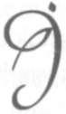
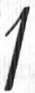

va ediyor. Hükümet olarak biz de bazı günlük işleri yürütmekte ve derin çalışmalar için istişare etmekte güçlük çekiyoruz. Bunları telif etmek mümkün değil... Bugüne kadar işleri, şahsi sorumlulu
ğum altında yürüttüm. Bugün birlikte bir karar alarak bundan sonraki işlerin ortak sorumluluğumuz altında yürümesini istiyorum. Teklifim şudur: Eğer
uygun bulursanız, bugüne kadar idare ettiğimiz gibi, bundan böyle de işleri Vekilsiz yürütelim. Ben Başvekil olarak hiçbir büyük icraata girişmeyeceğime size söz veririm. Cumhurbaşkanının imzasına ihtiyaç gösteren acele işleri, imzalanmış gibi yürütmeye devam edelim. Böylece bu konuda alınmış
müşterek bir kararımız olsun. Bunun yazılmasına
lüzum görmem. Muvafakatinizi bildirmeniz benim
için kâfidir.
Karar ittifakla alındı. Böylece komadaki Atatürk'ün yanıbaşında son Bakanlar Kurulu toplantımızı yapmış, nefes alıp verdiği sürece kendisine Vekil göstermeyi şanına yakıştıramadığımızı karara bağlamıştık.
Mareşal Fevzi Çakmak "Emrinizdeyim" diyor
Doktorlarla son bir defa daha görüştükten
sonra Ankara'ya döndüm. Ancak, Atatürk'ün durumu vahim ve ümitsizdi. Artık ölümün ayak sesleri duyulmaya başlamıştı. Yeni bir Atatürk bulmanın
imkânı olmadığını biliyordum. Ama yeni bir Cum-
121 • B İ L İ N M E Y E N A T A T Ü R K
hurbaşkanı bulmamız ve bu Cumhurbaşkanının
hiçbir sosyal ve politik sallantıya yer vermeden vazifesine başlamasını sağlamamız lazımdı.
Atatürk'ün değer verip saygı gösterdiği insanlardan biri, o zamanki Genelkurmay Başkanı Mare
şal Fevzi Çakmak'tı. Kendisiyle bu konuda istişare
etmeye karar verdim.
Mareşal Sayın Fevzi Çakmak'ı makamıma davet ettim. O da benim gibi Atatürk'ün hastalığını yakından takip ediyordu. Son durumu da kendisine anlattım. Dolmabahçe Sarayı'nda Atatürk'ün ya-nıbaşında yapılan Bakanlar Kurulu toplantısını ve
orada alınan kararı açıkladım. Sonra:
- Bu konuda siz ne düşünüyorsunuz? dedim.
Kimin Cumhurbaşkanı olmasını uygun görürsünüz?
Duraksamadan hemen cevap verdi:
- Emrinizdeyim!
Böylece Atatürk Ordusu'nun başında bulunan zatın fikrini yoklamıştım. Hükümet ve Meclis'in emrinde idi. Bu muhterem askere veda ederek
ayrıldım.
Şükrü Kaya: "Kararınızdan
Dolayı Elinizi Öpeceğim" diyor
Atatürk'ün Vekili olarak Cumhuriyet Halk
Partisi'nin Genel Başkanı idim. Eğilimlerini, bu sıfatımla yakından biliyordum. Bu itibarla siyasi parti 122 • İ S M E T B O Z D A Ğ
olarak böyle nazik bir konuyu istişare etmeye lüzum görmedim. Ancak, İçişleri Bakanlığı memleketin en büyük idare teşkilatını temsil ediyordu. Geniş bir istihbaratı vardı. Ayrıca iç huzurun başlıca sorumlusu idi. Onun da bir ara fikrini yoklamakta
fayda gördüm.
Hemen o günlerin birinde İçişleri Bakanı arkadaşım Şükrü Kaya'ya durumu açtım.
- Siz de son kabine toplantısı sırasında gözlerinizle gördünüz; Atatürk'ün durumu -maalesef-
ümitsizdir. Devletin sorumlu insanları olarak yoklu
ğunu hazırlanmalıyız. Bu itibarla, Atatürk'ün Anayasa gereğince işgal ettiği devlet makamına, yine Anayasa gereğince bir Cumhurbaşkanı seçmemiz gerekli... Bu makam için Büyük Millet Meclisi'nce İsmet İnönü'nün düşünüldüğünü görüyorum. Bizim vazifemiz, Millî İradenin serbestçe tecellisini sağlamaktır. Şu hâlde İsmet İnönü Cumhurbaşkanı olacaktır.
Siz nasıl karşılıyorsunuz?..
Benim bu sözlerim üzerine, esas fikrimi ve
İnönü hakkında müsaadekâr davranışımı gören Şükrü Kaya, hâlâ unutamadığım büyük bir heyecan gösterdi. Gözleri yaşardı. Ayağa fırlayarak: "Bu kararınızdan dolayı, verin, elinizi öpeceğim" dedi ve bütün uğraşmalarıma rağmen elimi öpmeden beni bırakmadı; o kadar sevinmiş, o kadar ferahlamıştı!
Ben zaten kararımı çoktan vermiştim. Ordunun ve idarenin başında bulunan arkadaşlarımla da 123 • B İ L İ N M E Y E N A T A T Ü R K
bu istişareyi yaptıktan sonra tam bir huzura kavuştum. Bu suretle Atatürk'e son hizmetimi yapıyordum. Çünkü Atatürk, Millî Bütünlüğe ve Millî huzura daima en yüksek kıymeti vermiştir. Ölümü dolayısı ile kopacak en küçük huzursuzluk, eminim
ki, ruhunu kıyamete kadar tazip edecekti.
"Saat Kaç?"
Büyük ve aziz Atatürk bir gün komadan çıktı ve odadakilere dönüp: "Saat kaç?.." dedi.
Bu, onun ağzından duyduğumuz son sözdür.
10 Kasım 1938 günü saat dokuzu beş geçe, gözlerini hayata yumduğu zaman, bizim için dünyanın bütün saatleri durmuştu. Bugün Anıtkabir'de Türk milletinin sinesinde uyuyor. Fakat, Atatürk Vatanseverliği, Atatürk Devrimciliği bütün gücü ile ayaktadır. O, Türk milletinin sinesinde kıyamete kadar uyuyacak, fikirleri ve idealleri Türk milletinin ruhunda kıyamete kadar yaşayacatır.
Sevgili Atatürk! Bu 10 Kasım'da da gözlerimde yaşlar, yüreğimde ideallerinle yine huzurunda-yım!
124 • İ S M E T B O Z D A Ğ
CELAL BAYAR CUMHURBAŞKANI
14.8.1978
Bayar'ın evinde başbaşa
tatürk ölmüş, İsmet İnönü Cumhurbaşkanı olmuş, fakat daha Çankaya'ya taşınmamıştı. Ben Başvekildim. Aradan ya on
gün geçmişti, ya da on beş gün.
Bir gün devlet işlerini görüşmek için İsmet
Paşanın evine gittim. Doğruca çalışma odasına girdim. Bir de baktım ki, o günlerin İş Bankası Genel Müdürü ve benim akrabam Muammer Eriş ile İnönü bazı hesapların üzerine eğilmiş çalışıyorlar! Ben içeri girince, ikisi de bozuldu.
Muammer Eriş'in orada ne maksatla olabilece
ğini bir an için düşündüm, fakat aklıma kötü bir şey
gelmedi. Safiyetle:
- Bir konu mu var, hayrola diye yaklaştım. İsmet Paşa eliyle bir yer gösterdi ve biraz beklememi işaret etti. Oturdum ve bulunduğum yerden önlerindeki evraka bakınca, bunların, benim İş Bankası Genel Müdürü olduğum sıralardaki evrak olduğunu hayretle gördüm!
125 • B İ L İ N M E Y E N A T A T Ü R K
Bu evrak ve şimdiki Genel Müdür, Cumhurbaşkanının yanında ne arıyordu?.
Tam bu sırada hesabı bitirmiş olacaklar ki,
akrabam Muammer Eriş, sıkıntıdan ter basmış İnönü'ye yazdırıyor:
- 4.500 lira borç bakiyesi var, dedi.
Meğer İsmet Paşa, Cumhurbaşkanı olur olmaz, bir yandan beni Başvekil yapmış, bir yandan da İş Bankası Genel Müdürü Muammer Eriş'i makamına çağırtarak, benim genel müdürlüğüm sırasındaki önemli evrakı hemen getirmesini ve bir yolsuzluk olup olmadığının araştırılacağını söylemiş!
Muammer Eriş'i, ben, İş Bankası Genel Mü-
dürlüğü'ne getirmiştim.
Karımın akrabası idi.
Benim hakkımda araştırma yapılmasına karşı
değildim ama, bana bunu dostane bir şekilde haber
verebilirdi. Hayretler içinde bakıyordum. Araştırma
günlerce sürdükten sonra, ben hesabın bağlandığı
güne rastlamışım! Geldiğim sırada da, yaptırdığım
ev için bankadan aldığım paranın hesabını gözden
geçiriyorlarmış... Borcumu ödemiştim. Bakiye
4.500 lira kalmıştı. Eriş bu neticeyi benim yanımda
İsmet Paşa'ya söylüyordu.
İsmet Paşa bana dönüp Muammer Eriş'e:
- Kuvvetli adam, dedi.. Kurduğu ve bu hale
getirdiği bankaya 4.500 lira borcu var!.. Tebrik ederim Celal Bey!
24.8.1972
Sayın Bayar'dan, Haluk Şaman,
Celal Yardımcı ile
birlikte dinlenmiştir.
tatürk ölmüş, Meclis toplanmış, İsmet
Paşa Cumhurbaşkanı seçilmiştir. Kendisini ilk tebrik eden ben oldum. Son derece duygulandı. Elimi uzun müddet bırakmadı... İtina ile tebrikime teşekkür etti ve protokol dışı oldu
ğu hâlde, kendisini beklememi rica etti... Bekledim...
Tebrik merasimi bittikten sonra Büyük Millet
Meclisi'ndeki Cumhurbaşkanı odasına götürdü beni ve itina ile yer gösterdi, ben kanapenin soluna oturacağıma sağına oturduğumu fark edince, yer
değiştirmek istedim, iki eliyle omuzlarıma bastırarak:
- Olmaz Celal Bey, çok rica ederim... Teklif
mi var.. Kaç yılın dostuyuz... diye beni yerimden
127 • B İ L İ N M E Y E N A T A T Ü R K
oynatmadı. Burada da Atatürk'ün hastalığı sırasında
Başvekil olarak gösterdiğim dirayeti öven sözler
söyledikten sonra:
- Yeni Kabinenizi kurunuz, Celal Bey! dedi.
itiraz ettim. "Çok yoruldum", dedim. "Kesif olaylar yaşadık, bunların ağırlığından henüz kurtulama-dım." dedim; fakat ne dedimse ikna edemedim. Kabineyi benim kurmamda ısrar ediyordu. Nihayet, beni tatmin etmiş olmak için:
- Size hiçbir telkinde bulunmayacağım; kabinenizi istediğiniz gibi ve istediğiniz kimselerle kurunuz, rica ederim! deyince, daha fazla direnmenin hem yakışık almayacağını, hem, memleket hesabına
yararlı olmayacağını düşündüm. Çünkü yeni Cumhurbaşkanı gelir gelmez yeni bir Kabine kurması, İsmet Paşa ile benim aramızın açık olmasını isteyenler için, bulunmaz nimet olacaktı! Kabul ettim:
- İtimadınıza teşekkür ederim!
Yeni Kabine, eski Kabinenin aynıydı. Bir ka
ğıda yazıp kendisine götürdüm. Şöyle bir baktı,
isimlerini okumadan kimleri aldığımı bildirmiş gibi
gözlerim bana kaldırdı:
- Çok güzel Celal Bey, dedi. Vefalı bir insansınız... Fakat müsaade eder misiniz, böyle olsun..
Ve elindeki kalemle, İçişleri Bakanı Şükrü
Kaya ile Dışişleri Bakanı Tevfik Rüştü Aras'ın adlarını çizdi...
5.5.1978
Sayın Bayar'ın evinde dinlenmiştir.
"Kale Atatürk" Yok
tatürk ölmüş, İsmet Paşa Cumhurbaşkanı seçilmişti. Kutlamak için ziyaretine gitmiştim. Bana, yeni kabineyi kurma
görevini verdi. Yanından çıkıyordum. Yolda Kâzım
Özalp'le karşılaştık. Samimi bir hareketle koluma
girdi ve benimle birlikte yürürken hem Başvekilliğimi kutladı, hem de dostane bir tavırla:
- Bak Celal Bey, dedi, artık "Kale Atatürk"
yok!. (Atatürk dedi ki, yok...) dedi.
Gözgöze geldik. Hiçbir karşılık vermedim. O
da!.. Sustuk!..
Bir kaç gün sonra idi. Yeni kabinenin programını İsmet Paşaya gösterıyordum. Çözümlenmesi gereken bir nokta vardı ve uygun bir formül bulamı-
yorduk. Bu sırada İsmet Paşa'ya:
129 • B İ L İ N M E Y E N A T A T Ü R K
- Atatürk'ün bu konuda bir formülü vardı,
dedim.
Birden telaşlandı. İki elini havaya kaldırarak:
- Onu bırak, dedi, sonra "kendileri bir fikir
bulamıyorlar da Atatürk'ün fikirlerini kullanıyorlar"
derler!..
26. 8. 1974
Bayar'ın evinde kendisinden
dinlenmiştir.
isenhover (ABD Başkanı) Türkiye'ye gelmişti. Görüşüyorduk. Afganistan'ın açıkta kaldığını hatırlattım. Yüzüme baktı, ellerini iki yana açarak," bunu da siz sağlayamaz mısınız" dedi. Çalışacağımızı vadettim.
Afganistan Kralı Türkiye'ye gelmiş ve kendisini iyi bir şekilde ağırlamaya dikkat etmiştim. Memnun ayrıldığını sanırım. Beni de bilmukabele Afganistan'a davet etmişti. Özellikle CENTO'ya dâhil edebilmek ümidiyle Afganistan'a gittim. Beni çok iyi
karşıladılar. Kral büyük bir ilgi gösterdi. Bana, askerlerini göstermek istediğini ve özellikle benim için bir geçit resmi düzenleyeceğini söyledi. Kabul ettim.
Beni, bir tanka çıkardılar. Protokol gereği, yanımda ya Kral, ya Başvekil, ya da Dışişleri Bakanı'nın bulunması gerekirdi. Kimse yoktu. Garip bir şeydi
bu.. Baktım, sol tarafımda bir subay var. Dikkat ettim, bu bir Rus Subayı idi. Önce hiçbir mana veremedim. İşaretlerinden anlamadığım için rütbesini çıkaramadım. Konuşmaya başladı.
131 • B İ L İ N M E Y E N A T A T Ü R K
Burjuva emperyalizminden bahsediyor, barış
çı sosyalist dünyadan bahsediyor, Türk-Rus dostlu
ğunun Kurtuluş Savaşımızla kurulduğunu söylüyor,
Rusların Afganistan'a barışı yaşatmak için yardım ettiğini anlatıyor ve bütün sosyalistlerin basmakalıp konuşmalarından birini yapıyordu. En sonunda:
"Kuvvetli bir ordu iyi şeydir. Fakat mütecaviz olmamak şartı ile" diye sözlerini bağladı.
Elimle, şöyle sırtına vurdum. "Bunları, niçin
bana söylüyorsunuz, dedim, Kremlin'e söyleyin..
Eğer Kremlin sizin sözünüzü dinlerse, dünya da rahat eder, siz de!" Hemen kayboldu.
O akşam şerefime bir yemek verilmişti. Yemekte bana, Kral'ın karşısında bir yer ayırmışlardı ve sağ yanımda Amerikan Sefirinin hanımı vardı. Kralın sağ başında da Rus Sefirinin hanımı oturuyordu.
Bana protokol böylece, milletlerin dünyadaki yerlerini anlatmaya çalışıyordu. Biz Amerikalılarla beraberdik, onlar da Ruslarla birlikteler.
Ertesi gün Kral bana bir fabrika kurduklarını,
bu fabrikayı gezip kendisine düşüncelerimi söylememi istedi. Ben Kral Türkiye'ye geldiği zaman, bazı fabrikaları kendim gezdirmiş ve izahat vermiştim. Anlaşılan beni fabrika uzmanı sanıyordu. Ricasını kırmadım ve ertesi günü fabrikayı gezdim.
Bu bir tekstil fabrikası idi ve Almanlar tarafından kurulmuştu. Memleketimizde örnekleri olduğu için iyi kurulmuş olduğunu fark etmekte ge-132 • İ S M E T B O Z D A Ğ
cikmedim. Ayrıca Almanlar, Afganistan pazarını ele
geçirmek için özen göstermişlerdi. Beğendim.
Akşama Kral'la buluştuğumuz zaman, Fabri-
ka'nın güzel bir kuruluş olduğunu, işletmeye açılın
ca iyi sonuçlar vermesi gerektiğini söylemekte iken,
yanıma Dışişleri Bakam geldi. Benim, fabrikadan konuştuğumu fark edince, nazik sayılmayacak biçimde fabrikanın aleyhinde konuşmaya başladı. Anladım
ki Ruslar, Almanların fabrika kurmalarından kuşkulanmışlar ve sempatizanlarını bu fabrika aleyhinde konuşmaya memur etmişlerdi. Dışişleri Bakanı, Sovyetlerle iş birliğinden yana olduğu için, Almanların kurdukları fabrikayı kötülüyordu.
Yemekten sonra Kral'la baş başa kaldık. Üzgün ve sıkıntılı idi.
Hiçbir açıklama yapmamış olduğum hâlde,
benim oraya niçin geldiğimi biliyordu. Mazeret gösterir gibi, Anayasalarının, dış ilişkilerde büyük aşiretlerin fikirlerim almayı şart koştuğunu ve aşiret reislerinin Sovyetlerden yana bir politika izlemek
kararında olduklarını bildiğini söyledi.
Ben Kral'a: "Siz, intihar etmeye karar vermişsiniz" dedim. Hiçbir cevap vermeden, boynunu bükmekle iktifa etti. Acaba, başına gelenlerle
yüzyüze kaldığı zaman, sözümü hatırladı mı?
Hatırlamaya zamanı oldu mu?..
28.1.1974
Celal Bayar'dan dinlenmiştir.
Bu konuşmada
Dr. Mükerrem Sarol ve
Samet Ağaoğlu vardı.
dnan Menderes iki yerde gevşeklik etmeseydi, ihtilale gitmeyecektik. Bunlardan biri 9 Eylül olayı, yani dokuz subay'ın bir
ihtilal örgütü kurdukları yolunda Samet
Kuşçunun ihbarı üzerine hükümetin tutumudur.
Başvekil, Çankaya'ya benimle görüşmeye gelmişti, durumu kendisiyle konuştuk. Ben, olayın üzerinde önemle durulmasını ve tahkikatın derinleştirilmesini söyledim. Bu tahkikattan bir sonuç alınamamış olsa bile, ordunun ne istediğini öğrenmiş
olacaktık. Hâlbuki Başvekil, hem tahkikatın örtbas
edilmek istendiğini biliyor, hem de bu davranışı
âdeta arkalıyordu. Onun korktuğu şey, ordunun
Demokrat Parti'ye karşı olduğu gibi bir tevatürün
134 • İ S M E T B O Z D A Ğ
ortaya çıkması idi. Bunun için tahkikatı derinleştirmek şöyle dursun, küllenmesınden memnun bir hâli vardı, katıldığım bir Bakanlar Kurulunda meseleyi ayrıca ele aldım. Ordunun önemi üstünde durdum. Cumhuriyet ordusundan bir ihtilal beklenemeyeceğini, ancak, bir huzursuzluk varsa, bunun hükümet bakımından bilinmesinde fayda olduğunu
anlattım ve konunun üzerinde durulmasını tavsiye
ettim.
Bunlardan bir netice çıkmadı. Mahkeme dokuz subayı beraat ettirdi. Muhbiri de cezalandırdı.
Genelkurmay Başkanını Çankaya'ya çağırdım. Kendisine mahkemenin nihai âmiri olduğunu, alınan kararın tatminkâr olmadığını söyledim. Rüştü Erdelhun, ellerini iki yana açarak boynunu büktü. "Ne yapalım, mahkemenin kararı böyledir" demekle yetindi.
Benim için yapacak bir şey kalmamıştı. Ama
ordu üstünde uyanıktım. Bu sebeple, Millî Savunma Bakanlığı'na Şemi Ergin'den sonra, Ethem Menderes'in getirilmesini hoş karşılamadım. Başvekile durumu açtım. Adnan Bey'e "Bu Ethem Bey'e gerektiğinden fazla önem veriyorsunuz. O bakanlıktan o bakanlığa durmadan taşımaktasınız! Bence, önem verdiğiniz ölçüde bir siyasi seviye değildir.
Meclis'te bu işi daha liyakatla yapacak arkadaşlarınız vardır." dedim. Adnan Bey: "Kendisine güvenim vardır. Bu sebeple Kabine'de bulundurmak istiyorum. Millî Savunma için de bu nedenle seçtim.
135 • B İ L İ N M E Y E N A T A T Ü R K
Çalışmalarda kendisini izleyeceğim ve destekleyeceğim" dedi. Benim için kararnameyi imzalamaktan başka yapacak bir şey kalmamıştı; imzaladım.
Çünkü Başvekil olarak benim de Adnan Menderes'e güvenim vardı ve kalmasını istiyordum.
Benim son güne kadar olan kanaatim, İsmet
Paşanın ihtilalden yana olmayacağı merkezindeydi.
Fakat Lütfü Kırdar'ın bu uyarısından sonra, ciddi
olarak kuşkuya düştüm. Durumu Başvekile anlattım. Adnan Menderes kendi intibalarının da bu merkezde olduğunu söyledi. Ancak Başvekil, Halk
Partisi'nin bunu başarabileceğine ihtimal vermiyordu. Gençlerin nümayişlerini, "Bu mu ihtilal?" diye küçümsemesinin sebebi budur. Bana, gerekli tedbirleri alacağını söyledi. Ayrıldık.
Olaylar büyüyordu. Ankara'ya sıçradı. Kızılay'da akşam nümayişleri başladı. İstanbul'da NA
TO toplantısı yapılacaktı. Gençler, bu toplantıyı sabote etme hazırlığı içindeydiler.
Başvekâlete gittim. Adnan Bey'le görüşmek istiyordum. Adnan Bey, "İçeride Bakanlar Kurulu toplantısı var. Buyurmaz mısınız?" dedi. Durumu, Bakanlar Kurulu hâlinde görüşmek elbette daha faydalı idi, kabul ettim. Beni toplantı salonuna getirdi ve kendisi çıkıp gitti.
Bakanlar Kurulu, Şemi Ergin'in başkanlığında müzakere ediyordu. Ticaret Vekili Ahmet Aker de sekreter olarak not tutuyordu. Şöyle bir göz attım, Bakanlar, perişandılar. Bunların böyle bir ko-136 • İ S M E T B O Z D A Ğ
nuyu selametle müzakere edebileceklerine ihtimal
yoktu. Tedbirleri görüşeceğim yerde, kendilerine
moral vermeye çalıştım. "Bunlar önemli şeyler de
ğildir, sinirlerinizi bozmasın" dedim. Olayları hafifleterek özetledim ve "Tahrik olduğuna kaniim. Tahrikin kaynaklarına eğilmek lazımdır" dedim.
Bakanlar Kurulu'ndan ümidimi kesince, Meclise gittim. Meclis, Bakanlar Kurulu'ndan da daha telaşlıydı. Herkeste bir nefsini koruma kaygusu başlamıştı. Birbirini tutmayan tedbirler öneriyorlardı. Moral sıfıra düşmüş gibiydi. Meclis Başkanı Refik Koral-tan, durmadan milletvekillerinin çeşitli şikâyetlerini
konuşuyor, fakat tek bir tedbir ortaya atmıyordu.
Burada da gerekenlerle moral yükseltici konuşmalar
yapmakla yetindim ve Çankaya'ya döndüm.
İlk işim, Genelkurmay Başkanı Rüştü Erdel-
hun'u çağırtmak oldu. Geldi. Ordunun durumunu
sordum. "Hükümetin emrinde" olduğunu söyledi. İstanbul'da nümayiş yapan gençlerin, Beyazıt Meydanı'nda cemselere doldurulduğunu, fakat Davutpaşa
kışlasına varmadan yollarda bunların subaylar tarafından salıverildiğini söyledim. Şaşırdı. Tahkik ettirece
ğini ve ihmali olanları cezalandıracağını söyledi.
Bunun üzerine kendisine, İstanbul'da NATO
toplantısının yapılacağını, bu toplantı sırasında dış
dünya temsilcilerine hükümeti küçük düşürücü
nümayişlere hazırlık yapıldığını anlattım ve bunların behemehal önlenmesini istedim. Sıkıyönetim komutanlıkları daha dikkatli bir çalışma içinde olmalıydılar. Sonra şunu ekledim: "Sizden bizzat İs-137 • B İ L İ N M E Y E N A T A T Ü R K
tanbul'a giderek durumu yerinde incelemenizi rica
ediyorum" dedim. Gitti. Helikopterle İstanbul üzerinde uçtu ve telsizle gerekenlere emir verdi. Barikatlar kurdurdu. NATO toplantısı sabote edilememişti ama, şehir yine de tedirgindi.
Bu olayları takip ettiğim sırada, Millî Savunma Vekili Ethem Menderes'in beni görmek istediğini söylediler. Kabul ettim. Bana, Genelkurmay Baş-
kanı'nın İstanbul üzerinde helikopterle uçmasının
ve gerekenlere şahsen emir vermesinin orduda iyi
karşılanmadığını, Generallerin, "Hükümetin bize
güveni yok mudur ki, Genelkurmay Başkanı işi ele
alıyor?" dediklerini anlattı ve Genelkurmay Başka-
nı'nı Ankara'ya çağırmak için benden izin istedi.
Kendisini tersledim.
Orduların Başkumandanı olarak işi ele almasının generalleri neden kuşkuya düşüreceğini sordum. O görevini yapıyor, siz de görevinizi yapınız dedim. Gitti.
Özellikle o günlerde Millî Savunma Vekilli
ğinde Ethem Menderes'in bulunması gerçekten bir
talihsizlik olmuştur.
Bu günlerde nümayişler iyice tavsamıştı. Ancak militanların gayretiyle ayakta durabiliyordu. İstanbul'dan Ankara'daki bazı kimselere telefonlarla haberler gönderiliyor ve "Artık tükendik, ne yapacaksanız, çabuk yapın" deniliyordu. Bunları haber alıyordum. Bu sırada Harbiye talebelerinin yürüyü
şü oldu. Bu yürüyüş, ihtilale zorlayanlara büyük bir
138 • İ S M E T B O Z D A Ğ
moral aşısı oldu. Canlandılar. Durumun kritik noktaya gelmekte olduğunu görüyorlardı.
Başvekili ve Genelkurmay Başkanı'nı Çankaya'ya çağırdım. Üçümüz, durumu inceden inceye görüştük. Ateşi söndürmek lazımdı. Rüştü Erdelhun, bütün kuvvetlerin kendisine bağlı olduğunu
ve her tedbiri almaya muktedir olduğunu söyledi.
Ancak bu tedbirleri alabilmek için Hükümetin kendisine yetki vermesi gerektiğini ileri sürdü. Adnan Menderes "Size istediğiniz yetkiyi veriyorum" dedi.
Erdelhun "Yazılı yetki isterim" diye direndi. Başvekil "Yazıp size yollarım" dedi. Dağıldık.
Adnan Bey bu yetkiyi yazıp göndermedi. Erdelhun da yetkiyi almadıkça harekete geçmedi. Hükümet varken, teşebbüsü elime alamıyordum. Geciktiğimizin de farkında idim. Bu sırada Başvekil, Eskişehir'e gideceğini söyledi. "Gidiniz, iyi olur" dedim. Maksadım, onun Ankara'da bulunmasından yararlanıp teşebbüsü ele almaktı. Fakat geç kalmıştık.."
Bayar bunları anlattıktan sonra sözlerine şunları ekledi:
"Bizim en büyük hatamız, istihbarata değer
vermemiş olmamızdır. Millî Emniyet Teşkilatı ile
gereği gibi meşgul olmadık. Bu teşkilatın başına getirdiğimiz kimseler, belki efendi insanlardı ama, bu işin adamı değildiler. Celal Karasaban, Hariciye'den
yetişmiş bir elemandı; bunu tutup istihbarat örgütünün başına geçirdik. Hatadır. Hem de cezası yalnız bize değil, millete ödettirilmiş bir hatadır."
BAYAR'IN İLK YILLARI
5.3.1982
Celal Bayar'ın evinde
Nilüfer ve Ahmet Gürsoy'la
abam, din adamı idi, sofu idi. Beş vakit
namaz kıldığı gibi, nafile namazları da kılardı. Her gün ikindi namazından akşam namazına kadar geçen zaman içinde Kur'an'dan bir
cüz okur ve sürekli hatim indirirdi. Bu hatimleri sıra ile, annesi, babası ve Devleti için yapardı. Onun gözünde Devletin bakası, kendi hayatından daha
önemli idi. Cephe gerisini yaşadığı 93 Savaşı'nın facialarını hiç unutmaz, düşman içinde kalmanın dehşetini bize sürekli olarak anlatırdı. Bu, kendisini
aşan devlet sevgisi, beni çok tesir altında bırakmıştır.
Babam bana da daha küçük yaşta iken Kuran
okumasını öğretti, namaz kıldırdı. Camiye gitmek
benim için çok zevkli bir işti. Bazan minareye çıkar
ezan okur, bazan da cami içinde müezzinlik ederdim. Köyün büyükleri, benim bu gayretli Müslü-
140 • İ S M E T B O Z D A Ğ
manlığımı pek beğenirler, babamı kutlarlar, beni
okşayan sözler söylerlerdi.
Oruç da tutardım. Fakat bazan şeytana uyup
orucu bozduğum da olmuştur; bazı namazları eksik
kıldığım gibi... Sağlam bir İslam terbiyesi ile büyüdüğüm bir gerçektir. Yatsı namazı kılındıktan sonra yatar, sabah ezanı okunmazdan önce kalkardık. İlk
işimiz abdest almaktı. Cami vakti gelinceye kadar
Kuran okur, dua ederdik. Sonra babamla birlikte
sabah namazı için camiye giderdik.
14.5.1972
Celal Bayar'dan dinlenmiştir.
ayar çocukluğu ve ilk gençliğine dair hayat hikâyesini şöyle anlattı: Babam, Plevne göçmenlerindendir.
İstanbul'a gelmiş, önce Medresede, sonra da
Darümuallim'de okuyarak öğretmen olmuş. Umur-
bey'e vermişler, gelmiş öğretmenlik yapmış. Medreseden de geçtiği için, zaman zaman Gemlik Müftü-
sü'ne vekâlet ederdi. Fıkıh bilgisine çok itibar ederlerdi.
Ben Umurbey'de doğmuşum.
İlkokulu babamın mektebinde okudum.
Rüşdiyenin son sınıfına geldiğim zaman, babamın
Abdullah adında bir arkadaşı köye geldi. Bu arkada
şı "Serkofçalı Abdullah" namı ile tanınırdı. Serkof-
çalı Abdullah, Fransızca biliyordu. Bana Fransızca
dersleri vermeye başladı. Babamdan da Arapça ve
Farsça dersleri alıyordum.
142 • İ S M E T B O Z D A Ğ
Bu sırada dayım Umurbey'e çıkageldi.
İstanbul'da Ali Suavi olaylarına karışmış ve
yakalancağını anlayınca, bir süre köyde saklanmayı
uygun görmüştü.
İstanbul'da gelirken bana -hiç unutmam-
Servet-i Fûnun dergisinin bir yıllık abone makbuzunu hediye olarak getirmişti.
Açık fikirli, idealist bir insandı. Abdülha-
mit'ten ve onun jurnalcilerinden nefret ediyordu.
Bunları bana o yaşlarımda o kadar heyecanla anlatmıştı ki, ben bütün hayatım boyunca Abdülhamit'ten ve her türlü jurnalcilerden nefret ettim.
Devlet işlerinde en zayıf yanım istihbarattı.
Cumhurbaşkanı iken bile, Millî Emniyetle ilgilenmek istemedim. Bunun bir devlet adamı için kusur olduğunu biliyorum. Fakat başka türlü yapmak
elimden gelmiyor.
Dayım Bana Ali Suavi üzerinde uzun bilgiler
verdi. Sultan Murad'ın meziyetlerini saymakla bitiremezdi. Ben de onunla beraber Sultan Murat'ı seviyor, Abdülhamit'ten nefret ediyordum.
Dayım, Ali Suavi'nin arkadaşları ile mektup-
laşıyordu. Bu mektuplar ve Servet-i Fûnun mecmuası, Gemlik'te Bakkal Nuri Bey vasıtası ile geliyordu. Onun için ben sık sık Gemlık'e iniyor, dayım namına gelen mektupları ve kitapları alarak köye dönüyordum.
143 • B İ L İ N M E Y E N A T A T Ü R K
Bu gidiş gelişler sırasında Gemlik'te bakkallık
yapan Nuri Bey'le ahbap oldum. Nuri Bey, Mülki-
ye'de okumuş, fakat nedense okulu bitirememişti.
İşittiklerime göre, bazı gizli hareketlere katılmış, cemiyetlere girmiş, sonra da kaçıp Gemlik'e yerleşmişti.
Bana, Namık Kemal'in kitaplarını ve bazı tarih kitaplarını okumam için veriyordu. Bunları dayımla birlikte okuyorduk. Hiç unutmam, Taberî tarihini bize bu Nuri Bey vermiş ve satır satır dayımla birlikte okumuştuk.
O yıllardaki bu çevre, beni ister istemez politik olaylara doğru sürükledi. Kafa formasyonum, Ali Suavi'nin fikirleriyle oluşuyordu. Mithat Paşa'yı
ve onun memlekete yaptığı hizmetleri de bütün ayrıntıları ile dayımdan dinlemiştim.
Bir süre sonra dayım İstanbul'a döndü. Ben
okumayı sürdürmek istiyordum. Fakat babam, beni yanından ayırmak istemiyordu. Bu yüzden 1da-di'ye devam edemedim.
15 yaşında iken, Bursa Ziraat Bankası, bir
memur alacaktı, müsabaka imtihanı açıldı. Katıldım
ve birincilikle kazandım.
Bana haber vediler. Gittim, banka müdürünün karşısına çıktım. Müdür beni baştan aşağıya süzdükten sonra:
- Aferin, dedi. İmtihanı birincilikle kazanmışsın... Seni şimdi memur almam lazım. Ama bir ke-144 • İ S M E T B O Z D A Ğ
re yaşın küçük. Sonra Allah'ın bildiğini senden ne
saklayayım. Burada odacı olarak aldığımız biri var,
onu bu yere almak için bu müsabaka imtihanını açtık, onun için seni alamıyorum. Ama söz veriyorum. İlk açılacak yere seni tayin edeceğim.
Adam kayırmanın kötülüğünü o yaşta bu
olayla tanıdım.
Durmadım üstünde, köye döndüm.
Fakat müdür sözünde durdu ve bir veznedarlık açılınca beni vazifeye çağırdı. 15 yaşındaydım. Kozahanı'ndaki iki odadan ibaret bankada çalışmaya başladım.
Tahtakale'de küçük bir oda tutmuştum. Geceleri burada 5 numara şişeli gaz lambası ışığı altında tarih kitapları ve romanlar okuyordum. Namık Kemal'in, Ziya Paşanın, Şinasi'nin şiir ve romanlarını hep o devrede okumuşumdur. Okumaya ve öğrenmeye karşı içimde büyük bir açlık vardı.
O zamanlar Bursa'da cizvit papazlarının yönettiği bir okul vardı. Hoca Ali Zade Mektebi'nin arkasında bir kilise ve onun bitişiğindeki binada dersler veriliyordu. Papazlar, gündüz sınıf hâlinde okuttukları gibi, akşamları geç saatlerde ve sabahları erken saatlerde de hususi dersler vermekte idiler. Ben sabah derslerine yazıldım. Sabahleyin kalkar kalkmaz cizvitlere gidiyor, oradan Ziraat Bankasındaki işime yetişiyordum.
145 • B İ L İ N M E Y E N A T A T Ü R K
Bankadan çıktıktan sonra, kadifeli Kahvenin
yanındaki Filibeli Ahmet Efendi'nin bir berber dükkânı vardı. Oraya giderdim. Buranın müdavimleri arasında o yıllarda Bursa'da sürgün olarak bulunan
ve Mektupçuluk yapan Süleyman Nafiz Bey, Sandı-
kemini, Emin Efendi, Maiyet memuru Hamza, gibi
tanınmış insanlar vardı.
Maiyet memuru Hamza, Mizancı Murad'ın
kardeşi idi ve o da Bursa'da sürgündü. Kısa bir zamanda kendisiyle dost olduk. Bir gün bana "İttihat ve Terakki Cemiyeti"ne girmek isteyip istemediğimi
sordu.
O tarihlerde İttihat Terakki gizli örgüttü. İhtilalci metotlarla yeraltında çalışıyordu. Abdülhamid'ı devirmek ve Meşrutiyeti ilan etmek gayesindeydi. Fikir olarak böyle bir cemiyete girmeye hazırdım. Tereddüt etmeden "evet" diye cevap verdim ve girdim.
Babam, uzaktan da olsa durumumu izliyordu.
Padişah düşmanı sayılan kimselerle düşüp
kalkmamdan memnun değildi. Bursa'ya geldi ve bana Hamza ile arkadaşlık etmememi, çünkü Hamza'nın Padişah düşmanı olduğunu söyledi. Hiç cevap vermedim. Yine de arkadaşlığıma devam ettim.
Çünkü ben de Padişah düşmanı idim!
Bankadaki ilk müşahedelerim beni kötümser
yaptı. Mithat Paşanın himmeti ile kurulmuş ilk
Türk Bankası olduğu hâlde, kredilerden "ekalliyet"
istifa ediyor, fakat Türkler, hemen hiç faydalanamı-
yorlardı. Köylüye verilen krediler pek değersiz bir
146 • İ S M E T B O Z D A Ğ
miktarda idi. Hele koza yetiştirenlere verdikleri krediyi, kozaların satışı sırasında köylüden, vadesi gelmeden almaya kalkışmaları ve almaları; bende isyan duyguları yaratmakta idi. Bu hareketleri, bankada
memur olduğum hâlde açıkça tenkit ediyor ve bankacılığa yakıştıramıyordum.
Bu sırada Bursa'da Doyçe Oryant Bank kuruldu. Başında Hacı Saffet Bey vardı. Hacı Saffet Bey Müdürdü. Kaldor adlı bir Macar da ikinci müdürlü
ğünü yapıyordu. Beni bu Bankaya Kaldor'dan sonra
gelen yetki ile ve imza salahiyeti ile aldılar.
Bankaya Maten gazetesi geliyordu. Kaldor,
Fransızca bildiği gibi Türkçe de biliyordu ve Ma-
ten'i beraberce okuyorduk. Jöntürklerin çalışmaları
ve Makedonya'daki hareketler hakkında sürekli bilgi alıyordum. O kadar sıkılıyordum, hürriyetsizlikten o derece sıkılıyordum ki, kendimi âdeta bir kuyuda hissediyordum.!
Ziraat Bankası'nda iken edindiğim Ali Efendi
diye bir dostum vardı. Annesi, beni evladı gibi severdi. İlle de beni evlendirmek istiyordu. Bir gün bana bir resim gösterdi. "Bu kızı ben münasip gördüm. Sen de beğeniyorsan bu iş olsun" dedi. "Peki"
dedim, evlendim. Karımın ailesi de -benim gibi—
Tunaboylu idi.
1908 İnkılabı olunca, Mizancı Murad'ın kardeşi Hamza İstanbul'a gitti; onun yerine ben görevi aldım. Bursa'da İttihat ve Terakki Cemiyeti'nın Başkanı olduğum zaman sadece 19 yaşında idim.
5.3.1982
Celal Bayar'ın evinde
Kızı ve Damadı ile
murbey'de babamın bir yardımcı öğretmeni vardı, onun da adı Abdullah. Garip bir raslantı, o da Berkofçalı idi. Berkofça-lı Abdullah, Fransızca bilirdi. Fransızcasının ne öl
çüde olduğunu bugün kestiremem ama, bana Fran-
sızcanın gramerini öğretiyor, kelimeler ezberletiyordu. Babamın verdiği Farsça ve Arapça derslerinden arta kalan zamanımı, Fransızca öğrenmeye ayırıyordum.
Fakat bu çalışmalar bütün zamanımı doldurmazdı. Yine de çocuklarla köy meydanında oyunlar oynamaya vaktim kalırdı. Kapalı havalarda daha
çok aşık oynardık. Bu oyunda becerikli idim. Aşık
oyununda, "çuk" oturtmak diye bir hüner vardı. Bileği ve parmakları iyi kullanma melekesine dayanırdı. Bunu becerirdim. Bu yüzden bir koca torba dolusu aşık kemiğim birikmişti.
148 • İ S M E T B O Z D A Ğ
Hava açık olduğu zaman, çelik-çomak, birdirbir, Bico gibi oyunlar oynardık. Bakıyorum, bugünkü çocuklar da birdirbir, çelik-çomak oynuyorlar. Onun için size bunun tarifim yapmayacağım.
Ama sanırım bicoyu siz de bilmezsiniz. Bu oyun
şöyle oynanırdı:
Oyuna girecek çocuklar toplaşırdık. Aramızdan iki kişi, Reis veya Kaptan olurdu. Kaptanlar, sıra ile kendi takımlarını seçerlerdi. Seçme işi bittikten sonra ayak ölçüsü oyunu ile, "ebe" olacak takım belirlenirdi. Yani, kaçanlar kimler olacak, kovalayanlar kimler olacak? Bir çeşit, hırsız-polis oyunu..
Kaptanlar, takımlarını hazırlarlar, oyun başlar ve kaçanlar, köyün dört yanına dağılırlar. Kaçan takımın kaptanı, daha önce planını arkadaşlarına
açıklar, kimin nereye saklanacağını, kimin şaşırtmaca vereceğim, kimin sıkışınca takımı için kendisini feda edeceğini söyler.
Kovalayanların kaptanı da aynı işi yapar.
Oyun başlar.
Bütün köyü dolduran bir oyundur bu... Ba-
zan saatler sürebilir. Kaçanlar, kimseye yakalanmadan çınarın dibine geldikçe, meydanda seyirciler kendisini "Bico" diye alkışlarlar.. Övünmek gibi olmasın ama, ben bu oyunlarda hep kaptan seçilirdim. Çoğu zaman da bizim takım oyunu kazanırdı.
5. 3. 1980
Bayar'ın evinde Nilüfer ve
Ahmet Gürsoyla birlikte
abam, ağabeyim Behzat'ı, Edirne Askerî
İdadisine, küçük ağabeyim Asım'ı da
Bahriye okuluna yazdırmıştı. Sürekli kaybedilen savaşlar, bozgunlar, babamda güçlü bir "ordu hasreti" yaratmıştı. Bu tutkusu yüzünden de iki oğlunu birden askerî okullara yerleştirmiş bulunuyordu.
Fakat kısa aralıklarla iki ağabeyim, verem illetine yakalandıkları için, köye döndüler!
Ben o zaman küçüktüm ama, her şeyi bütün
teferruatına kadar hatırlıyorum. Halk arasında adı
"İnce Hastalık" olan veremin o yıllarda tedavisi çok güçtü. Çevrede iyi doktor yoktu. Babamın aldığı ayda beş altın, köyde ferahlıkla yaşamamızı sağlıyordu ama, mütehassıs doktor bulmaya ve ilaç almaya yetecek kadar değildi.
150 • İ S M E T B O Z D A Ğ
Yine de Bursa'da doktorlara baş vuruldu, ilaçlar alındı, kocakan ilaçları yapıldı, yiyeceklerine özel itina gösterildi ama, ağabeylerimin kurtarılması
mümkün olmadı. Birbiri ardından ikisini de kaybettik.
Bu facia babamı temelinden sarstı ama, annemi yıktı, diyebilirim! Benim İstanbul'a okumaya gönderilmeyişimde, annemin bu üzüntüsünün tesiri olmuştur.
Olay, benim üzerimde iki türlü tesir yarattı.
Ağabeylerimi seviyordum ve onları kaybetmek benim için bir üzüntü idi. Fakat ondan başka, her iki kardeşimin veremden ölmesi beni korkutmuştu.
"Acaba ben de mi veremden öleceğim?" diye çok
endişe ettim. Bir uzun süre, bu tesir altında yaşadıktan sonra, İslami bir tevekkülle bunu aklımdan çıkardım.
2.3.1982
Bayar'ın evinde Nilüfer ve
Ahmet Gürsoy'la
1 yaşımda iken, Rüştiye'yi bitirmiştim. Özel
dersler alarak tahsilimi ilerletiyordum. Dayımın köye gelmesi bu sıralara rastlar.
Dayım Mustafa Şevket, "Sarıklı İhtilalci" Ali
Suavi'nin arkadaşı idi ve kendisi ile birlikte bazı eylemlere katılmıştı. Ortada görünmemek için köye geldiği zaman, bana "Servet-i Fünun" mecmuasının bir yıllık abonesini hediye olarak getirmişti.
- Dayımla birlikte uzun günboyu köyü dola
şıyor, konuşuyorduk. Padişahların nasıl birer müstebit olduğunu anlatıyor ve içimde düşmanlık çukurları açıyordu.
O zamana kadar ailemden ve çevremden
edindiğim fikirlere göre, Padişahlık çok muhterem
bir makamdı. Orada oturanlar, adaletle iş görürler,
devleti ve tebayı adaletle yönetirlerdi. Osmanlı Dev-
152 • İ S M E T B O Z D A Ğ
leti "Ebed-müddet" yani, sonsuza kadar sürecek bir devletti. Bir ferdin vazifesi, Devletine ve ülkesine
faydalı olmak; gerekirse, Devleti ve ülkesi için hayatını feda etmekti.
Fakat çok sevdiğim dayım, Padişahın böyle
olmadığını söylüyordu. Özellikle, hafiye teşkilatına
düşman olmuştum. Hafiyelik yapanları kullanan
padişahı da sevmiyor, ona da yavaş yavaş düşman
kesiliyordum!
Ancak bu duygularımı saklamak gerektiğini
de bilmekte idim. Özellikle babamın bu düşüncemi
öğrenmesi, felaket olurdu!
Dayım bir süre sonra köyden ayrıldı ve Ker-
bela'nın bir kasabasında Kadılık görevi aldı. Fakat
bu zaman zarfında, Gemlik'te bakkallık yapan Nuri
Bey'le tanışmıştım.
Nuri Bey, Mülkiye mektebim bitirememiş,
Gemlik'e gelip bakkallık yapmaya başlamıştı. Bütün
Jontürk neşriyatını takip ediyordu. Bana özellikle,
Namık Kemal'in bütün şiirlerini, piyeslerini, romanlarını Nuri Bey vermiştir. Ben bunları gizlice içer gibi okudum. Namık Kemal'in vatan sevgisi içimi coşturuyor, ben de köyün dar sınırlarından kurtulup okumak, adam olmak ve vatana, Namık Kemal gibi hizmetler yapmak istiyordum.
İstanbul'da "Galatasaray Sultanisi" adlı bir
okulun olduğunu ve bu okulda derslerin bile Fran-
153 • B İ L İ N M E Y E N A T A T Ü R K
sızca okunduğunu duymuştum. Bu okula girebil-
sem, hem tahsilimi ilerletebilirim, hem de Fransız-
cayı tam olarak öğrenebilirdim.
Düşündüm, taşındım ve sonunda İstanbul'a
kaçmaya karar verdim! İstanbul'da teyzem vardı,
onun evinde kalabilirdim. Merak etmemeleri için
eve ulaşacak bir haber bırakıp İstanbul'a gittim.
Teyzemin evinde kalıyordum ama, onlara da
yük olduğumu fark ediyordum. Geçimleri, benim
masraflarımı da karşılayacak ölçüde değildi. Hemen
her gün, Şehzadebaşı'ndan Galatasaray'a kadar yürüyor ve öğrencilerin okula giriş ve çıkışlarını gıpta ile seyrediyordum: "Ne olur, ben de bu mesut insanların arasına karışabilsem!"
Okul ücretli idi, babamın maaşı, masraflarımı
karşılayamayacaktı. Zaten babamın da Galatasaray'a
gitmeme gönlü yatmıyordu. İster istemez köye döndüm.
Fakat bütün bunlara rağmen okumaktan
ümidimi kesmemiştim. Kendi kendime çareler arıyordum. Sonunda babama düşüncemi kabul ettirebilmek için bir plan kurdum. Bir gün konuşurken ansızın:
- Siz beni sevmiyorsnuz, dedim.
Babam hayretle yüzüme baktı...
- Bunu nerden çıkarıyorsun?..
- Şurdan çıkarıyorum. Her baba, oğlunun
154 • İ S M E T B O Z D A Ğ
okuması için elinden gelen fedakârlığı yapıyor, fakat siz benim okumam için bir fedakârlık yapmaya yanaşmıyorsunuz?..
Babam, beni gözleri ile uzun, uzun süzdükten sonra:
- Fakat, dedi sen de benim istediğim yerde
okumak istemiyorsun?
O zaman ayaklarım suya erdi. Babam, kendisi gibi, benim de Medrese'de okumamı istiyordu ve bunu bana bir kaç kere teklif etmişti. Ben, çağdaş
okullarda okumak istediğim için direnmiştim. Şimdi babam, bunu ima ediyordu? Hiç sesimi çıkarmadan önüme baktım. Medreseye gitmeye gönlüm yoktu!..
6.6.1980 günü Bayarin
Çiftehavuzlar'daki Evi
Bayar Anlatıyor
ursa'da, Alman Bankası'nda çalışıyordum.
Tıraş olduğum berber dükkânının müdavimlerinden, Vilayet maiyet memuru Hamza Bey vardı. Zamanla, ahbap olduk.
Bir gün bana, tttihat ve Terakki Derneği'ne
girmek isteyip istemediğimi sordu. Bu gizli dernekten haberim vardı. Çünkü çalıştığım bankaya çeşitli Avrupa gazeteleri ve bu arada bol Türkiye haberleri yayımlayan Fransızca Maten gazetesi geliyordu.
Bu gazetelerden, Paris'te Ahmet Rıza Bey adlı bir
Türk'ün gazete çıkardığını ve Abdülhamid idaresine
karşı muhalefet yaptığını biliyordum.
İttihat ve Terakki Cemiyeti de kurulduktan
sonra Ahmet Rıza Bey'i içine almıştı. Hamza Bey'e;
"Sevinerek katılmak isterim" dedim. Bana bir cevap vermedi, bir kaç gün sonra fikrimi değiştirmediy-sem, adresini verdiği eve gitmemi söyledi. Gittim.
156 • İ S M E T B O Z D A Ğ
İki katlı, ahşap, küçük bir evdi.
Alt kattaki odada beni bir hayli beklettikten
sonra, yukarıya çağırdılar.
Merdivenleri çıktım ve önüme gelen bir kapıyı açtım. Yüreğim, göğsüme sığmıyormuş gibi çarpıyordu.
Oda karanlıktı. Bir mum yanıyordu. Önünde
bir masa vardı.
Masanın üzerindeki tabanca gözüme çarptı.
Biraz dikkat edince, yanında Kur'an-ı Kerim'in de
durduğunun farkına vardım.
Masanın gerisinde, yalnız gözleri görünen siyah kukuletalı üç adam vardı. Üçü de iri yarı idiler.
Oturdukları hâlde, benim boyuma yakın görünüyorlardı.
22-23 yaşlarında idim. Gizli bir derneğe girmenin heyecanı bütün vücudumu sarmıştı. Karşımdaki kukuletalı üç kişiden ortadaki ağır bir sesle konuştu:
- Cemiyetimize girmek istiyormuşsun, doğru
mu?..
- Evet efendim.
- Cemiyetimizin gizli olduğunu, bütün çalış-
malarının gizli sürdürülmesi gerektiğini biliyor musun?
- Evet Efendim...
- Bak, genç bir adamsın!.. İyi bir pozisyonun
var!.. Memlekete, cemiyetimiz yolu ile hizmet etme-
157 • B İ L İ N M E Y E N A T A T Ü R K
ye çalışırken, işini, aileni, huzurunu kaybedebilirsin!..
Hayatın da gidebilir...
Bir gün kendini darağacının altında bulabilirsin!..
Bunları iyice düşünüp taşındın da mı Cemi-
yet'imize girmek istiyorsun?..
- Evet efendim.
- Öyleyse, sağ elim Kurana, sol elini tabancanın üstüne koy ve benim söyleyeceklerimi tekrarlayarak yemin et!
Sağ elimi Kur'an'a, sol elimi tabancanın üstüne koydum ve söylenenleri tekrarlayarak yemin ettim. İttihat ve Terakki Cemiyeti'nin azası olmuştum artık... Bursa'da topu topu beş kişi idik. Beş kişilik
bir yeraltı hücresi olarak yuvalanmıştık. Başkanımız, beni Cemiyet'e davet eden Vilayet Maiyet Memuru idi.
1908'de Meşrutiyet ilan edilince, cemiyet yüze çıkmadı, yeraltında kaldı. Yalnız, Genel Başkanlıktan gelen bir yazıda dernekten bir kişinin delege seçilmesi ve yüze çıkarak Cemiyet adına hükümet
ve mahalli idare yetkilileriyle temasları yürütmesi
isteniyordu.
Beni seçtiler. Ben zaten, Bursa'dan ayrılan
Başkan Hamza'nın yerine başkanlık yapmaktaydım.
Bankada kişiliğimi açıkladığım zaman, çevremdeki
insanlarda büyük hayret ve sevinç gördüm. Banka-
158 • İ S M E T B O Z D A Ğ
nın özellikle yabancı personeli, memleketi için çalı
şan insanları hayranlıkla karşılıyordu. Ben de böylece Bursa'da Cemiyet'in mümessili olarak çalışmaya başladım.
Talat Paşa, Kara Kemal, Mithat Şükrü gibi İttihat ve Terakki'nin birinci derecedeki insanları, birer vesile ile Bursa'ya geldiler ve ben kendileriyle görüştüm.
Talat Paşa (o zaman bey) Bursa teşkilatı hakkında Hakkı Baha Bey'den bilgi almak istemiş. Hakkı Baha Bey, Selanik'te İttihat Terakki Kurucuları arasında bulunmuş bir Bursalıdır. Beni ve Bursa teşkilatını yakından tanırdı. Sonradan bana söylediğine göre Hakkı Baha, Talat Paşaya: "Mahmut Celal-
'in dediklerine bak, gerisini hiç dinleme" demiş...
Bu yüzden olacak, Talat Paşanın beni uzaktan, fakat dikkatle izlediğini daha sonra öğrenebildim.
Kara Kemal, İstanbul teşkilatının yöneticisi
idi. "Küçük efendi" diye adı çıkmıştır. Bu Talat Pa-
şa'dan sonra ağırlığı olan kişi anlamına gelir. Onunla, İstanbul'a talimat almak, seçimlere katılmak için, gidip gelirken tanışmıştık.
Bana özel bir muhabbeti olduğunu fark ediyordum. Genel Merkez'deki itibarımı sağlayan güçlerden biri de sanırım bu idi...
Bir ara "Cemiyetin Katib-i Umumisi" (Genel
Sekreter) Mithat Şükrü bey Bursa'ya geldi. Çekir-
ge'de Servinaz otelinde kalıyordu. Kendisine ziyare-
159 • B İ L İ N M E Y E N A T A T Ü R K
te gittim. Gördüm ki bahçede yemek yiyor. Rahatsız etmemek ve kendisini ziyarete geldiğimden haberdar edebilmek için, garsonla kartımı gönderdim.
"Buyursun" demiş, gittim, karşısına oturup Bursa teşkilatı hakkında kendisine bilgi verdim. Beni dikkatle dinledi. Daha sonra yazdığı hatıralarda benim için çok övücü sözler kullanmıştır.
Kartvizit kullanmak, dikkatini çekmişti.
Çünkü o yıllarda kartvizit kullanmak yaygın değildi.
Bir gün, Genel Başkanlıktan bir telgraf aldım, merkeze gelmem isteniyordu.
Benim Bursa'dan ayrılmam, o tarihte çok
güçtü. Çünkü bankada üç imza sahibi memur vardı. Ben bunlardan biri idim. Arkadaşlardan biri İstanbul'a gidince, biz iki imza yetkili memur kaldık.
Direksiyonun Türkçe muhaberatını ben imzalıyor
ve mesuliyetini benimsiyordum, Almanca muhaberatı Mr. Handell sorumluluğunu benimseyerek imzalıyor, Fransızca muhaberatı da ortak imzalıyorduk.
Ben, Bursa'dan ayrılacak olsam, imzanın biri
gitmiş olacak ve bu yüzden bankanın her işi durmuş olacaktı. O zamanlar hafta tatili cuma günleri yapılırdı. Biz banka olarak perşembe günü öğleden
sonra bankayı kapatırdık. Genel Başkanlıktan gelen
telgraf üzerine perşembe günü Mudanya'dan Vapurla İstanbul'a gitmeyi, cuma günü görüşmeyi ve 160 • İ S M E T B O Z D A Ğ
yine cuma günü akşamı Bursa'ya dönmeyi tasarladım.
İstanbul'a gittim, beni Mithat Şükrü Bey karşıladı ve Talat Paşa ile Kara Kemal Bey'in yanına götürdü. Talat Paşa bana;
- Seni İzmir Katib-i Mesullüğüne tayin etmek
istiyoruz, ne dersin?
Tereddüt etmeden cevap verdim:
- Emredersiniz...
Kara Kemal atıldı:
- Emretmek yok!. Bu, bir hizmet teklifidir.
Kabul edersin, reddedersin... Bu senin bileceğin bir
şey!
- Can-ü minnetle, dedim.
- Allah muvaffak etsin! Hazırlanıp hemen hareket edersin!
Çıktım. Başım uğulduyordu!.
Düşünemeyeceğim kadar büyük bir hizmet
teklif edilmişti. İzmir, o yıllarda bir bakıma, İstanbul'dan daha önemli idi.
17.8.1972
Haluk ŞAMAN'la birlikte
Celal Bayar'dan dinlenmiştir.
elal Bayar İzmir'de İttihat ve Terakki'nin
Katib-i Mesulü olarak Vagon yolsuzlukları
üzerinde durduktan ve İttihat Tarakki'nin
Merkez Heyeti azası Doktor Nâzım'ın akrabası olan
İstasyon müdürünün yolsuzluk sırasında suçüstü
yakalayıp hapsettirdikten sonra, İstanbul'a davet
edilir.
O zaman, Fırka'nın Genel Sekreteri olan Mithat Şükrü, Bayar'ı yanına alıp Nafıa Vekilı'ne götürür. Önde Mithat Şükrü arkadan Bayar, Vekil'in odasına girerler.
Vekil'in karşısındaki iskemlelerin en ucuna
Mithat Şükrü oturur. Celal Bayar'ın ya Mithat Şükrünün sağına geçip oturması, ya da ayakta kalması gereklidir. Esasen Mithat Şükrü de bunun için en
uçtaki sandalyeye oturmuştur!
162 • İ S M E T B O Z D A Ğ
Bayar, burada yapacağı konuşmanın, takınacağı tavrın siyasi hayatını tayin edeceğini anlar. Tereddüt etmeden iskemleleri dolaşıp Mithat Şükrümün sağına oturur.
Nafıa Vekili, daha önceleri Bursa'da Valilik
yaptığı için Bayar'ı tanımamaktadır. Hatırını sorar.
Sonra:
- Anlat bakalım, der.
- Bayar, Vagon yolsuzluklarını anlatmaya
başlar. Bitirir. Bakan gülerek:
- Celal Bey, der, bu anlattığın insanların ağızları yok mu?
Bayar, sözün nereye getirileceğini bile, bile
cevap verir:
- Var, efendim.
- Öyle ise yiyecekler!.
Vekil ve Mithat Şükrü gülerler.
Bayar gülmez. Bakana:
- Öyle ise benim sizden ayrı bir ricam olacak,
diye konuşmaya başlar. Mademki ağızları olan insanların rüşvet alacaklarını tabii görüyorsunuz. O
zaman lütfen bir kanun çıkarın. Rüşvet ve iltimas
ceza tehdidi altında değildir, diye; biz de kurtulalım, sız de rahatlayın!
Buz gibi bir hava dalgalanır. Vekil, önüne bakar; Mithat Şükrü ayağa kalkıp veda eder; birlikte 163 • B İ L İ N M E Y E N A T A T Ü R K
çıkarlar. Parti'ye kadar birlikte yürüdükleri hâlde
Mithat Şükrü, Bayar'a, bir tek kelime bile söylemez.
Merkez-i Umumi'ye geldikleri zaman Bayar
sadece:
- Allaha ısmarladık, demekle yetinir. Fakat
olay Merkezi Umumi'de müzakere edildiği zaman,
çoğunluk Bayar'la birlikte olur.
18.1.1978 günü
Celal Bayar'ın evinde ve huzurunda
Sayın Tayfur Sökmenden dinlenmiştir.
ttihat ve Terakki'nin önemli kişilerinden biri olan Ferit Tek. Abdülhamit aleyhine bazı hareketlere girdiği ve yakalandığı için, Fi-zan'a sürülmüştü. Bana bir gün bu sürgün hikâyesini uzun uzun anlattı.
Trablusgarp'a sürüldükten sonra bir süre orada kalmış ve bölgenin komutanı Recep Paşa'nın göz yummasından yararlanarak kaçmış, Fransa'ya gelmiş. Bundan sonrasını Ferit Tek şöyle anlam:
- Paris'le Siyan Politik tahsili yapıyordum,
Prof çok değerli bir ilim adamıydı, derslerinde başarılı olduğum için de benimle yakından il-gileniyor, ilerlemem için kitaplar salık veriyor, yardım ediyordu. 1 [akkımda bildiği tek şey "Osmanlı"
olduğumdu, ama ne dinimi, ne de milliyetimi bilmiyordu, o güne kadar bunu sormamıştı da... Bir gün:
165 • B İ L İ N M E Y E N A T A T Ü R K
- Peki ne yapıyorsunuz Fransa'da?.. dedi.
Jöntürklerden olduğumu, memleketimdeki
istibdat idaresini yıkmak için çalıştığımı, ülkeme
hürriyet ve parlamenter rejim götürmek istediğimi
heyecanla anlattım. Sözümü kesmeden beni dikkatle dinledi ve konuşmam sona erince de:
- Sen kendini vatansever mı görüyorsun? dedi.
"Elbette" deyince karmakarışık üzüntülü bir
yüzle konuştu:
- Sen vatansever değil, vatan hainisin!
Neye uğradığımı bilemedim ve kendimi savunmaya çalıştım, o yine dikkatle beni dinliyordu.
Sözümü bitirince:
- Fransa da bu dönemlerden geçmiştir, dedi.
Vatanseverlikle, Vatan hainliği bazan birbirine karı
şır. İyi niyetli olmak, vatansever olmak için yeterli
değildir, hareketiyle vatanına yarat sağlamak lazımdır.
Siz ülkeniz için özgürlük ve parlamenter rejim isterken kendinizi düşünüyorsunuz, ülkenizi değil!..
Sizin ülkeniz, bir çok milletlerden ve dinlerden kurulu bir imparatorluk. Nitekim, Osmanlı İmparatorluğu diyorsunuz. Bu, yekpare bir imparatorluktur. Eğer, özgürlükçü parlamenter rejimi memleketinizde uygularsanız, başka dinden, başka milletten olan milletvekilleri, Türklerden çok daha faz-166 • İ S M E T B O Z D A Ğ
la olur ve bundan Türkler değil, öteki milletler yararlanırlar. Parlamenter rejimi siz değil, onlar isteyecekler, siz vermemeye çalışacaksınız!
Çünkü Parlamenter rejim, sizi eninde sonunda Anadolu'nun bir parçası içine kapatır, bütün öteki milletler sizden ayrılırlar. Eğer hedefiniz bu ise, çalışmanız doğrudur. Yok, Osmanlı İmparatorluğu'-
nun canlı ve güçlü olmasını istiyorsanız, kendi aleyhinize çalışıyorsunuz, o zaman da size vatan haini dediğim için kızmamanız lazım...
Ben, Parlamenter rejimde Türk milletvekillerinin diğer milletvekillerinden sayı bakımından üstün olacaklarını, böylece bu mahzuru kaldıracağımızı söyledim. Güldü. Eğer kendiniz için istediğiniz hürriyeti, öteki dinden ve milletten olanlar için istemiyorsanız, buna hürriyetçilik denilmez. Batırırsınız ülkenizi...
Ben Hoca'nın laflarından iyice giyindim. Bir
daha bu konu açılmadı. Fakat 1908 Devrimi başarıya ulaşınca ve imparatorluğun yaprak dökümü başlayınca, Hocamın ne kadar haklı olduğunu gördüm ama, çok geç... Biz, "Genç Türkler" değil, "Toy Türklermişiz."
Celal Bayar'dan dinlenmiştir.
17.9.1972
emirci Efe'nin yanında çalışıyordum. Düşmanın kuvvetli bir kol hâlinde Salihli'ye doğru ilerlediğini haber aldık. Demirci Efe,
zeybeklerini topladı ve uygun yerlerde pusulanarak
düşmanın yaklaşmasını bekledik. Kurşun menziline
girince bizim taraftan ateş başladı. Neye uğradıklarını anlayamadılar, önce oldukları yerde direnmeyi denediler, sonra geri çekilerek mevzilendiler. Şimdi
karşılıklı bir savaş başlamıştı.
Düşman, geriden yeni kuvvetlerle güçlendi.
Sağdan, soldan dağı çevirerek kuvvetler harekete
geçti!
Bizim kuvvetimiz sayılıydı. Düşmanla başa
çıkamazdık. Ancak, en çok zarar verecek noktaya
kadar dayanmak, sonra düzenle geri çekilmek gerekti.
Demirci Efe, havayı beğenmedi ve komutayı
Hacı Şükrü'ye bırakarak çekildi. Hacı Şükrü, yiğit
168 • İ S M E T B O Z D A Ğ
bir efeydi. Dayanıyordu. Fakat bizim hattan silah
seslerinin gittikçe azaldığını fark ettim. Olup biteni
anlamak için yamaçtan dolaşıp öteki mevzilerımizi
görmek istedim. Bir de baktım ki, sol kanat mevzi-
lerindeki zeybekler, süslü elbiseleriyle atlarına binmişler, içerilere gidiyorlardı. Beş, altı kişiydiler. Önlerine çıktım:
"Arkadaşlarınızı düşman karşısında bırakıp
nereye gidiyorsunuz; dönün geriye!" dedim.
İçlerinden biri hemen filintasına davrandı ve,
bana çevirip ateş etti. Bir kurşun, kulağımın dibinden vızıldadı. Arkadaşları, hemen ateş eden zeybe
ğin silahına sarıldılar ve ateşi tekrarlamasına engel
oldular.
Ateş eden Zeybek beni tanımıyordu. Arkadaşlarına "Kim ülen bu" dedi. Arkadaşları kurye olarak Demirci'nin yanına gelip gittikleri için, beni
görmüşlerdi; anlattılar. Zeybek kurnaz bir dönüş
yaptı "Bağışla Hoca Efendi. Bilemedik, seni gâvurdan yana sandık biz!"
- Şimdi öğrendin mi?
- Öğrendik.
- Dön öyleyse geri!
Duraladılar. Anladım ki dönmeye niyetleri
yoktu. Biraz daha diretsem, elbirliği edip beni vura-
caklardı. Çünkü kaçtıklarını Demirci'ye söyleyebilirdim. İçlerinden biri: 169 • B İ L İ N M E Y E N A T A T Ü R K
- Biz düşmana yüzgeri etmedik. Hoca Efendi,
dedi. Tepeyi dolanıp ardından saldıracağız!.
Dediklerini kabul etmekten başka çare yoktu. Düpedüz kaçıyorlardı ama, hiç değilse bir bahane icat etmişlerdi. "Peki öyleyse" deyip yürüdüm.
Hemen Hacı Şükrü'yü durumdan haberdar ettim.
Aradan bir süre geçti.
Balıkesir Kongresi'nde Akhisar Cephesi Ko-
mutanlığı'na tayin edilmiştim. Ankara Büyük Millet
Meclisi'nde de mebustum. Ankara'ya gitmem gerekiyordu. Akhisar Cephesi Komutanlığı'na Hafız'ı vekil bıraktım.
Geceyi Yarbay Hüsameddin'in evinde geçirdim. Eski Teşkilat-ı Mahsusa'dan Ahmet Ağa da, benimle birlikte konuktu.
Yarbay, benim Bursa'ya gideceğimi, oradan
Ankara'ya geçeceğimi duyunca kaygılandı. Anza-
vur, almış yürümüştü. Kuvayımilliyecileri ve İttihatçıları kasıp kavuruyordu. Ben de, aradığının ikisi de vardı. Ahmet Ağa da benimle birlikte Bursa'ya gelmek istedi. Yarbayın kendisine bu fikri verdiğini
anlamıştım. Bu Yaman Teşkilat-ı Mahsusacı, Bursa'ya kadar yanımda olarak beni korumaya çalışacaktı.
Sabahleyin bir yaylı araba ile yola çıktık.
Hüsameddin Bey, bize ayrıca beş silahlı atlıyı da,
koruyucu olarak vermişti. Atlıların üçü önden,
ikisi geriden geliyordu. Ben arabanın arkasına,
170 • İ S M E T B O Z D A Ğ
Ahmet Ağa da arabacının yanına silahlarımızla
mevzilenmiştik.
Balıkesir'i, Bandırma'yı geçtik. Kirmastı'ya
girmek üzereydik. Silahlı koruyucular tarafından
korunan bir yaylı araba, herkesin yol boyu dikkatini çekiyordu.
Kirmastı'ya (M. Kemal Paşa) geldiğimiz zaman, atlılara teşekkür ettim. Görevlerinin bittiğini ve kıtalarına dönebileceklerini söyledim. Saygılı birer selam verip atlarının başlarını döndürdüler ve gözden kayboldular.
Sonradan öğrendim ki bu beş atlı, bizden ayrılır ayrılmaz, Anzavur'a katılmışlar ve onun askeri olmuşlar!
Beni pekâlâ tutuklayabilirler ve Anzavur'a
teslim edebilirlerdi. Bir kez de hayatımı böylece
kurtarmış oldum.
Kirmastıya girdik, otele indim. Ahmet Ağa,
biraz sonra kasabaya çıkıp dolaşmak istedi. Ben
otelde kaldım. Kaymakam ve halk benim kim oldu
ğumu öğrenmek istiyormuş. Ahmet Ağa, milletvekili olduğumu söyleyince, biraz yatışmışlar ama, yine de kasabada kalırsam, başlarına dert açabilece
ğim düşüncesiyle tedirginlikleri gevşememiş...
Ertesi sabah Bursa'ya hareket ettik;
Bursa'da Yeniyol'un (İnönü Caddesi) başında
Nuriye Oteli'ne indim. Nuriye Oteli'nin sahibi Nuri
Bey eski günlerden dostumdu. Bana: "Hoş geldin"
dedi ama, eski içtenliği yoktu!..
171 • B İ L İ N M E Y E N A T A T Ü R K
Durumu anlamak için caddeye çıktım. Tanıdıklar, beni görünce kaldırım değiştiriyorlar, selam vermemeye çalışıyorlardı.
İttihatçı eski akadaşları aradım, bulamadım.
Yeniyol'un alt başında İttihatçı hancılar vardı;
onlara gittim. Birini buldum. Durumu anlamak için
"Ne var ne yok?" dedim.
"Anzavur geliyor," dedi, "Sağ yanında kelam-ı kadim, boynunda mavzer, nur yüzlü, sakallı, şeriattan ayrılmayan bir adam! Padişah efendimizi korumak için yola düşmüş! Hepimiz onun etrafındayız."
Durumu anlamıştım.
Otele geldim, hesabı gördüm, bir yaylı araba
ile Çekirge'deki evime hareket ettim. Gazeteciler,
"Şeyhülislam'ın fetvasını yazıyor, Kuva-yı Milliyeciler asidir, öldürülmeleri sevap" diye çiğniyorlardı.
Akşam karanlığında eve geldim.
Karım ve çocuklarımla henüz konuşmaya
başlamıştık ki, kapı çalındı. Açtım. Yarı karanlıkta
bir adam elime bir kağıt tutuşturup uzaklaştı. Lambanın ışığında kâğıdı açtım: Bu bir servis telgrafı idi ve Mustafa Kemal Paşa'dan geliyordu. Benden hemen Bursa'da teşkilât kurmamı ve Anzavur'u durdurmamı istiyordu.
Karım, hayatında ilk defa konuştu: "Eee, bu
kadarı da fazla!" Daha on dakika oturup konuşmadan yeni bir göreve başlamak, kadın ve anne olarak ona ağır gelmişti!
30.9.1972
Celal Bayar'dan dinlenmiştir.
ş Bankası Genel müdürü idim. Tarsus'tan,
bir banka müşterimizden bir mektup aldım.
Bu müşterimiz bana, İş Bankası'na tahsil
için 6.000 liralı bir senet verdiğini, ödenmediği takdirde protesto edilmesini de talimat olarak bildirdi
ğini yazıyor ve Mersin şubesinin, bu senedin muhatabını protesto etmediği için alacağının tahsiline hukuki imkân kalmadığını da ilave ederek sızlanıyordu.
Hemen durumu incelettim.
Gerçekten hata şubemizde idi.
Şubede çalışan elemanlar gerçekten değerli
kişiler olmakla beraber, bir dikkatsizlik yapmışlar
ve müşteriyi zarara sokmuşlardı!
Hemen şubeye talimat verdim. Protestosuz
senedi müşteriden aldırdım ve bedeli olan 6.000 lirayı da ödettim. Çünkü kanaatim odur ki, banka, muhatabına veya müşterisine karşı hata yapamaz.
173 • B İ L İ N M E Y E N A T A T Ü R K
Yaparsa, zararına banka katlanır. Banka için imza ve
taahhüt o derece önemlidir.
Hemen şunu da belirteyim, bu hareketimden
sonra bu müşteri, bütün işlerini bizim banka ile
yapmaya başladı ve kendisinden yılda 15-20 bin lira kazanmaya başladık. Senedi de gecikerek tahsil edilebildi.
Şimdi size başka bir olay anlatayım.
Yıl 1957...
Cumhurbaşkanıyım.
İş Bankası'nın o zamanki Genel Müdürü Ahmet Dallı bir gün beni ziyaret etti ve hatıralarımı yazmakta olduğumu haber aldığını, İş Bankası'nın bir yayın kolu bulunduğunu, bu hatıralarımı banka olarak basmak istediklerini söyledi. Ben tereddüt ettim.
Kendisine: "Siz bu hatıraları basarsınız ama, ortaya bir sürü dedikodu dökülür. Banka Celal Bayar'a şu
kadar para vermiş, bu kadar para vermiş diye hayali
reklamlar icat ederler. Bu sebeple bundan vazgeçin.
Başımız ağrımasın" dedim.
Ahmet Dallı ısrar etti. "Kim ne söylerse, söylesin. Siz İş Bankası'nın kurucususunuz. Bizim yayın kolumuz dururken hatıralarınızı başka yerde bastırmanızdan müteessir oluruz. Nihayet bir "sözleşme" yapılacaktır. Merak eden gelir görür" dedi.
Israr üzerine kabul ettim. Bir mukavele yaptık. Hatıralardan bir kâr doğarsa, bunu yarı yarıya paylaşacaktık. Bu kân da ben almayacaktım. Gösterdiğim bir hayır kurumuna banka eliyle verilecekti.
174 • İ S M E T B O Z D A Ğ
O günlerde Umurbey'de bir Kütüphane ve
Müze tesis etmeyi düşünüyordum. Kitabın gelirinin
bana ait kısmını da buraya adayacaktım.
Kitabın birinci cildi bitmişti. Yazıları, dokümanları Banka'ya teslim ettim. Onlar gereken kâğıdı ısmarladılar ve stok ettiler. Kitap dizildi. Tashihleri
yapıldı. Bu sırada 27 Mayıs geldi çattı. Yassıada'ya
gittik. Kayseri Hapishanesi'nden çıktıktan sonra Ban-
ka'dan kitabı sordum. Cevap bile çıkmadı.
Yazı ile sordum. Aramızdaki mukaveleyi hatırlattım.
Nihayet araya aracılar koydular ve bu işi lütfen kurcalamamamı istediler.
Millî Birlik Komitesi, işin üzerinde durmuş.
Kitap basıldığı hâlde ortadan kaldırmış. Stok kağıtları da Millî Birlik Komitesinin çıkardığı bir kitaba vermişler. Artık bu işi yapmak istemiyorlarmış.
Elimde mukavele vardı. Mahkemeye gidebilir, zarar, ziyan isteğinde bulunabilirdim. Fakat te
şebbüs etmedim.
Benim için önemli olan kitabın onlar tarafından çıkarılması değil, benim emek verip kurduğum ve bugünkü hâline getirdiğim İş Bankası'nın; değil
sözünden, imzasından caymasıydı.
O İş Bankası ki, benim yönetimimde iken,
görevin aksamasından doğan zararı bile göze alıyor-
ken, yıllar sonra, kurucusu olan bir kimseye imza
ile taahhüt ettiği bir işten cayıyordu!..

30.9.1972
Celal Bayar'dan dinlenmiştir.
mpaks meselesi şudur:
İş Bankası'ndan ayrılan bazı memurlar, birleşerek bir şirket kurdular ve ticaret yapmaya başladılar. Bunlar, Devlet kuruluşlarının ilan edilen ihtiyaçlarını dünya piyasasından araştırıyorlar ve bu fabrikaların aracılığını yapıyorlardı. Bundan
bir komisyon almaları da tabii idi.
Denizbank gemi sipariş edecekti. Bu şirket,
hem İngiltere'ye hem de Almanya'ya baş vurarak teklifler aldı. Denizbank bu tekliflerden birini seçti. Seçtiği, Almanya'nın teklifi idi. Almanlar aynı şartlarla daha uzun kredi ve daha ucuz fiyat teklif ediyorlardı.
Sipariş Almanya'ya verilince, İngilizler öfkelendiler. Hemen bu türlü ihalelerde olduğu gibi şikâyetlere başladılar. İngiltere hariciyesi, Türk hariciyesini bu dedikodulardan haberdar etti.
İsmet İnönü'nün emri ile bir tahkikat açıldı
ve dava mahkemeye gitti.
176 . İ S M E T B O Z D A Ğ
Mahkeme önce şirket mensuplarını tutukladı. Fakat sonunda dava beraatle sonuçlandı.
Bu şirketin kurucularının İş Bankası memurları olması vesilesiyle olay, benim aleyhimde kullanılmak istenmiştir.
Oğlum Turgut, İsviçre'de Yüksek Ticaret
Okulunu bitirip yurda dönmüştü. Her vatandaş gibi şubeye başvurdu. Yedeksubay okuluna girdi. Çekilen kurada Doğubeyazıt düştü ve hemen görevinin başına gitti.
Bugünlerde, bazı Generaller, bana duydukları yakınlık dolayısı ile kendisini yaver almak istediler.Turgut bu teklifleri reddetti. Ve bana:
- Beni senin oğlun olduğum için yaver almak
istiyorlar. Ben reddettim. Her vatandaş gibi askerli
ğimi yapıp bitireceğim, dedi.
Bugünlerde Ben Başbakanlıktan çekilmiştim.
Kenarda yaşıyordum.
Her devirde olduğu gibi, bu devirde de bazı
kimseler, iktidarın gözüne girmek için şuna buna
kara bulaştırmaya çalışıyorlardı.
Bu arada, Doğubeyazıt'ta görev yapan Bursalı Baytar Rasim adında bir yarbay İsmet İnönü'ye bir mektup yazmış. Mektubunda: Benim oğlumun, kı-
tasıyle birlikte Doğubeyazıt'tan Azerbaycan'a geçmeye hazırlandığını ve burada toplayacağı kuvvetlerle Türkiye'ye girip iktidarı devirmeyi tasarladığını yazmış!
177 • B İ L İ N M E Y E N A T A T Ü R K
İsmet İnönü mektubu, o zaman orduların ba
şında bulunan Mareşale göndereceği yerede, Orgeneral Kâzım Orbay'a göndermiş. Enver Paşa'nın kardeşi de olan bu General, hemen bir şifre ile 3.
Ordu Komutanına bildirmiş. "Acele netice" istemiş.
Turgut'u tutuklamışlar. İfadesini almışlar.
Durumu Ankara'ya bildirmişler.
Ankara, evrakın, Doğubeyazıt'taki Süvari Tümeni Komutanına gönderilmesini ve mütaleasının alınmasını istemiş!
Evrak, Tümen komutanının eline geçince,
hiçbir aslı, faslı olması mümkün olmayan evrakın
üstüne "Çirkin bir iftiradır. Esastan uzaktır. Turgut Bayar, vatansever ve görevine düşkün bir ordu
mensubudur. Tahkikat, muhbirin ahlaki durumunu ortaya koymaktadır" diye yazmış ve sonra Turgut'u çağırarak:
- Bak, oğlum. Babana kızanlar, hınçlarını
senden çıkarmak istiyorlar. Yazışmaları Ankara'ya
böylece gönderiyorum. Babana da bunu böylece
söyle, demiş.
Bana intikal eden durumu ben Mareşale anlattım. Çok üzüldü. Gerekeni yapacağını söyledi.
Ve Muhbir Albay Rasim'i, tekaüde sevketmiş. Benim bundan haberim yoktu.
Bir gün İsmet İnönü'nün Cumhurbaşkanlığı
yaveri Celal, bana uğradı. Elinde bir mektup vardı.
Bir süre orada buradan konuştuktan sonra,
"Cumhurbaşkan'ımıza bir mektup gelmiş, onu Ma-
178 • İ S M E T B O Z D A Ğ
reşale götürüyorum" diyerek mektubu bana uzattı.
Okudum. İmza yine Albay Rasim'indi. Mektupta,
kendisinin İsmet Paşaya hizmet ve bağlılık göstermek için o mektubu yazdığını, fakat şimdi kendisinin tekaüde sevk olunduğunu, böylece mağdur olduğunu, hizmet yolunda gadre uğramasına izin verilmemesini İsmet Paşa'dan istiyordu. Ben Yaver Celale; olup bitenleri anlattıktan sonra;
- Eğer İsmet Paşa'nın bir meselesi varsa, işte
burada oturuyorum. Gelsin benimle uğraşssın. Ama
çoluk çocuğumla uğraşmaktan lütfet vazgeçsin! dedim. Ve yavere, bunu böylece kendisine bildirmesini de rica ettim.
Bir kaç gün sonra yaver tekrar bana uğradı.
Sözlerimi Cumhurbaşkanı'na arz ettiğini ve İsmet
Paşa'nın bana söylenmek üzere aynen şunları söylediğini anlattı: "Git, Celal Bey'e benim tarafımdan söyle. Katiyen böyle bir şey söz konusu değildir.
Vicdanımdan emin olsun!"
25.7.1978
Bayar'ın Çiftehavuzlar'daki evi, balkonda.
Şaştığım Şeyler -1
arihî fıkralar, romanlar yazan Ziya Şakir'i,
Bursa'da iken tanırdım. İttihat ve Tarakki'-
nin ilk yılları idi. Bursa'da "Alemdar" adı i-
le bir gazete çıkarıyorduk, Ziya Şakir de bu gazeteye yazılar yazardı, tanışırdık.
Bu sırada Balkan Savaşı patladı. Görevli askerden başka, bu savaşa katılan genç gönüllüler de vardı, Ziya Şakir de bu gönüllüler arasına yazılmış
ve Balkan savaşına katılmıştı. Savaştan, dokuz kur
şun yarası ile çıkmıştı Zıya Şakır!
Bursa'ya geldi, o günlerin kargaşalığı içinde,
bacaklarındaki beş kurşun çıkarılmadan taburcu
edilmişti ve yaralan da öylece kaldı.
Cesur bir insandı Ziya Şakir; daha sonra da
bu kurşunlan çıkartmamış ve o savaşın hatırası olarak vücudunda bırakmıştı.
180• İ S M E T B O Z D A Ğ
Gel zaman, git zaman Ziya Şakir yaşlandı. Ba-
caklarındaki kurşun yaraları kendisini rahatsız etmeye başlamış, üstelik vücudunu da zehirliyor-muş... Başvekil olduğum günlerde ( 1 9 3 8 ) beni ziyarete geldi ve bu kurşunların kendisini çok rahatsız ettiğini, doktorların, kanını da zehirlediğini söylediklerini anlattı. "Niçin aldırmıyorsun?" dedim.
Boynunu büktü, "ameliyat için param yok, biliyorsun, günlük yaşıyoruz" dedi.
Düşündüm ki, bu insan, bir vatanseverlik örneği vererek Balkan Harbi'ne gönüllü katılmıştır; dokuz yara almıştır; hayatını zor kurtarmıştır!. Şimdi o savaşta aldığı yaraların içindeki kurşunlar, kendisini rahatsız etmekte ve işini yapmayı güçleştirmektedir. Yarasını tedavi etmek ve kurşunlarını almak, devletin görevidir. O gün yapılmamışsa, bugün yapılır, bu görev devletindir. Kendisine:
"Meraklanma, Ben sana para bulurum." dedim. Emir verdim, örtülü ödenekten Ziya Şakir'e hatırımda kaldığına göre 3-4 yüz lira kadar yardımda bulundum. Ziya Şakir, bu para ile ameliyat oldu ve
kurşunlardan kurtuldu.
Gel zaman, git zaman, aradan yıllar ve yıllar
geçti... Ziya Şakir öldü, ben Cumhurbaşkanı oldum, 27 Mayıs olayı patladı ve beni Yassıada'ya götürdüler.
Bir gün, "soruşturmadan istediklerini" söylediler, giyinip gittim.
181 • B İ L İ N M E Y E N A T A T Ü R K
Masanın başında yüzünü tanıdığım ve fakat
adını hatırlamadığım bir Maliye Müfettişi vardı.
Onların lokallerine arasıra gittiğim ve kendileriyle
sohbet ettiğim sırada, en çok benimle ilgilenen ve
gözüme girmeye çalışan bir adamdı. Karşısında
durdum, oturmak için yer göstermediğini görünce,
bir sandalyeye oturdum. Bana:
- Yazar Ziya Şakir'i tanır mısınız? dedi.
- Evet, dedim.
- Kendinizi methettirmek için bu yazara, Başvekilken örtülü ödenekten para vermişsiniz, dedi olayı anlatın.
Şaştım, kaldım!
Düşmanlık, kin hâline dönüşünce, ne rezil
mertebelere erebiliyordu...
Olayı olduğu gibi anlattım, ifadem yazıldı,
imzaladım. Sonra müfettiş beye döndüm:
- Bir şey sorabilir miyim?.. dedim.
- Sor, dedi.
- Görüyorum ki, dedim. Benim bütün devlet
hayatımı didik didik etmişsiniz. 22 yıl önce bir
Türk yazarının sağlığını kurtarmak için yaptığım
bir devlet hizmetinin hesabını benden soruyorsunuz. Şikâyetçi değil, hatta memnunum. Fakat örtülü ödenek hesabında paranın niçin verildiği yazılmaz, sadece ödenen miktar belirtilir ve kimin emriyle verildiği kaydedilir, siz, bu parayı Ziya Şa-182 • İ S M E T B O Z D A Ğ
kir'e, kendimi methettirmek için verdiğimi nereden çıkardınız? Benim yerimde siz olsaydınız, bu hizmeti yapmaz mıydınız ve yaptığınız zaman, 22
yıl sonra size, bana sorduğunuz suali sorsalar, acaba ne düşünürdünüz?..
Yüzünün karıştığını farkettim ama, mahcup
olduğuna dair bir işaret görmedim.
25.7.1978 Bayar'ın Çıftehavuzlar'daki evi,
balkonda, vişnesuyu içerek yapılan sohbet
(Yılın en sıcak günü)
Şaştığım Şeyler - II
assıadada'ydım, kıştı, sorgudan istendiğimi haber verdiler.
Hazırlandım, pardesümü ve şapkamı da
giyerek muhafızların önünde yürümeye
başladım. Sorgular, yukarıda bir salonda yapılıyordu. Uzun zaman, odadan çıkmadığım için yürürken yoruluyordum. Belki bu idmansızlığın üstüne, yukarıda hangi münasebetsiz soru ile karşı karşıya geleceğimin düşüncesi de tesir ediyordu.
Salonun kapısına gelince, muhafızlar durdular, ben şapkamı, pardesümü asacak bir portmanto göremediğim için, kapının önündeki sandalyenin
üstüne bıraktım ve odaya girdim.
Masanın başına bir Hâkim Yüzbaşı vardı. Zeki görünüşlü bir yüzü vardı, saygılı davrandı ve bana karşısında yer gösterdi. Oturdum.
184 • İ S M E T B O Z D A Ğ
Masanın solunda küçük bir daktilo masası
vardı ve genç bir hanım zaptı tutmak için bekliyordu.
Yüzbaşı, insanca ilgi gösterdi, hatırımı sordu,
bulunduğum yerde üşüyüp üşümediğimi öğrenmek
istedi, uygun karşılıklar verdim. Sıra soruşturmaya
geldi. Yüzbaşı, elinde bir kâğıdı tutarak konuşmaya
başladı:
- Siz, Cumhurbaşkanı olduğunuz sırada, Elmalılı Hamdi Efendi, sizin aleyhinizde bulunmuş!
Siz, kendisim Çankaya'ya davet etmişsiniz ve bir
çay ikram etmişsiniz. Fakat ikram ettiğiniz çayın
içine öyle bir madde koydurmuşsunuz ki, bu madde, insanı ağır ağır zehirleyerek öldürürmüş! Netekim Elmalılı Hamdi Efendi de bu yüzden ölmüş...
Ne dersiniz?..
- Allah, derim!.. dedim. Elmalılı Hamdi Efendiyi, gıyaben tanırdım. Muhterem bir din adamı idi. Değerli bir Kur'an tercümesi ve tefsiri yaptığını
bilirdim. Fakat ne konuşmuştuk, ne de benim
Cumhurbaşkanı olduğum günlerde Çankaya'ya adımını atmıştı. Durumu anlattım. Suçlamanın bu mertebesi karşısında donup kalmıştım. Bu suçlama
değil, insanlığı aşan bir iftira idi. Fakat kendi içimden yine de şükrettim: Bunca kin ve düşmanlık içinde yaşayan bu insanların, ya bir de muhayyileleri olsa da, iftirayı yakıştırabilseler, nelerle karşıla
şacaktım!
185 • B İ L İ N M E Y E N A T A T Ü R K
Hâkim yüzbaşıya:
- Bir şey sorabilir miyim?.. dedim.
- Buyurun, sorabilirsiniz?.. diye karşılık verdi.
- Bu olaya siz inandınız da mı bunu bana soruyorsunuz, yoksa inanmadın mı?.
Güldü:
- Hayır, inanmadım, dedi. Fakat bir ihbardır,
dosyayı sonuçlandırmamız gereklidir, usulen sordum.
- Teşekkür ederim, dedim. Zabıt yazdırıldı,
imzaladım. Konuşmaya başladık.
Bu genç asker, hukukçu, benim Çankaya'da-
ki bütün evrakımı incelemiş ve tek, tek gözden ge
çirmiş. Bana bunları anlattıktan sonra dedi ki:
- Orada gördüm, bir eser hazırlıyormuşsu-
nuz, vesikalar toplamışsınız, vesikaların üzerinde
paraflarınız, notlarınız var. Kanaatimce çok değerlidir. Bu eseri, sizden başkası yazamaz. Bana bir yazılı müracaatınız olursa, bu vesikaları buraya getirmeye ve sizin, eserinizi burada tamamlamanıza yardım etmeye çalışırım.
Beni asmaya niyetleri olduğunu, yüzbaşı da
biliyordu. Nasılsa ölecek, eser yazılamayacak, barı
burada hem oyalanır, hem de eser ortaya çıkar diye
düşündüğü belli idi. İyi niyetle konuştuğuna inandığım için cevap verdim: 186 • İ S M E T B O Z D A Ğ
- Görüyorsunuz, dedim, bana burada neler
sorulmakta... Bu sorgudan sonra hücreme dönüp
sağlam fikirle kitap yazabilir miyim?
Önüne baktı.
Daktilo hanım, dinlediklerinin etkisi ile yüzüme, merhamet ve hayranlık karışımı bir duygu içinde bakıyordu.
Ne de olsa kadınlar daha insancıldırlar. Bu sırada Yüzbaşı davrandı, çay söyledi ve benden Atatürk'e ait bir hatıra anlatmamı rica etti. Halet-i ruhi-yem, hiç elverişli olmamasına rağmen, bu iki iyi niyetli ve Atatürkçü genci kırmadım ve bir iki hatıramı anlattım. Şimdi, ne anlattığımı maalesef hatırlamıyorum, fakat o kadar yüreklerini açarak dinlemişlerdi ki, ben de ferahladım.
Kendilerinden müsade istediğim zaman, ikisi
birden ayağa kalktı, beni kapıya kadar geçirdiler ve
yüzbaşı, girerken sandalyenin üstüne bıraktığım
pardesümü ve şapkamı aldı, pardesümü giymem
için tuttu ve şapkamı saygı ile eğilerek bana uzattı:
- Teşekkür ederiz, efendim.
- Ben teşekkür ederim, dedim ve yürüdüm.
Nerede ise, gözlerim buğulanacaktı. "Demek
Hâkimin böylesi de bulunuyor, memleket için
ümittir", diye düşündüm.
Ertesi gün, Yassıada Komutanı Tarık Güryay
hücreme geldi. Kendisinde yadırganmayan sesile:
- Dün seni sorguda yine terletmişler... dedi,
cevap vermedim.
7.12.1977 Çiftehavuzlar
Ölümle Göz Göze
ayatımda bir çok defalar ölümle göz göze
geldim. Hatırıma gelen bir kaçını anlatayım.
Demirci Efe'yle Ege'de, Yunan ordusu ile bir
çatışmadan yeni çıkmıştık. Bu Demirci ile son beraber savaşımızdır. Düşman kuvvetleri çoktu, yüksek ateş gücü karşısında dayanamadık, bozulduk.
Efe'den ayrılmaya karar verdim. Demirci'ye
veda ettim, çevresindekilere Allahaısmarladık dedim ve yürüdüm.
Benim atım yoktu. Bana arkadaşlık eden Jandarma Teğmeninin atına birlikte biniyorduk. Baktım, Teğmen atı çeşmede suluyor, ben yürümeye başladım. O nasılsa yolda bana yetişecek ve ben de
ata binecektim!..
188 • İ S M E T B O Z D A Ğ
Bir müddet yürüdüm ki, kulağımın dibinden
bir kurşun vızıldadı ve çok yakınımda bir tüfeğin patladığını duydum!..
Döndüm, Efe'nin kızanlarından biri idi, kaşlarının altından beni süzüyordu.
Hiçbir şey olmamış gibi yoluma devam ettim...
Az sonra Teğmen bana yetişti, ata bindim.
Hikâyenin gerisini Teğmen'den dinledim:
Ben yürüyünce, kızanlardan biri, "Bu adam neyin nesi; hocayım diyor, elinde tesbih geziniyor ama, belki de casustur!" demiş ve Teğmenin müdahalesine
vakit kalmadan tüfeği doğrultup arkamdan ateş etmiş!
Teğmen müdahele ettiği için, ateşi kesmiş.... O gün
ölüm, kulağımın dibinden sıyırıp geçmişti.
Ben aylarca bu insanların arasında yaşamıştım. Bu zeybekler için bir adamın hayatı, bir tavu-
ğunkinden daha ucuzdu.
Bir gün Demirci Efe'ye bunu söylediğim zaman, güldü:
"Tavuğun yumurtası var, boğazladın mı yumurtadan olursun, insanın nesi var ki..." diye karşılık verdi.
Bu kadar çabuk kuşkulanan, bu kadar kısa
düşünen insanların arasında aylarca yaşamak ve sağ
salım çıkmak, Allah'ın bir hikmeti olmalı...
İkinci ölümle yüzyüze gelişim, Milis kuvvetleri Manisa Cephesi Kumandanlığını bırakıp İstan-189 • B İ L İ N M E Y E N A T A T Ü R K
bul Meclisi'ne gideceğim sıralarda başımdan geçti.
Manisa'dan Akhisar'a, oradan da Bandırma'ya geçmiştim. Yanımda İttihatçı arkadaşlarımın tavsiye ettiği Ahmet Ağa adında bir arkadaşım vardı. Bu Ahmet Ağa, Teşkilat-ı Mahsusa'da çalışmış, gözü pek, terbiyeli ve sadık bir insandı. Arkadaşlarım da beni
muhafaza etsin diye onu yanımda bulundurmamı
istemişlerdi, Bandırma'ya geldik.
O sıralar, bu çevrede Anzavur kuvvetleri vardı. Edremit kaymakamı iken, sonradan Bandırma civarında Kuvayı Milliye çekirdeğini kurmuş bir
genç, yanımdaki Ahmet Ağa'nın akrabası olduğu
için bizi karşıladı. O zamanki adı Kirmastı olan
Mustafa Kemal Paşa'ya gideceğimizi, oradan da Bursa'ya geçeceğimizi öğrenince;
- Buraları çok karışık, Anzavur'un adamları
ile dolu. Bizi görürlerse, hayırlı olmaz. Onun için
ben sizin yanınıza bir muhafız müfrezesi vereyim,
Mustafa Kemal Paşa'ya kadar selametle gidin, dedi
ve kendi kuvvetlerinden dokuz kişiyi bize kattı.
Bir araba ile gidiyorduk. Muhafızların üçü
önde, üçü arkada gidiyorlar, üçü de yanımızda dolaşıyorlardı. Biz de silahlarımızı kucağımızda tutuyorduk. Yolda hiçbir olağanüstü olayla karşılaşmadan Mustafa Kemal Paşa'nın yakınlarına gelince, böyle muhafızlarla kasabaya girmemek için, arabayı
durdurdum ve muhafızlara teşekkür ederek biraz
da para verdim. O zamanlar böyle yardımlarda ve-
190 • İ S M E T B O Z D A Ğ
rilen paraya "arpalık" derlerdi. "Atlarınıza biraz arpa alırsınız" diye verilirdi bu para...
Yeri gelmişken söyleyelim: Ben Manisa cephesi kumandanı idim ve bir aylığım vardı ama, hiçbir zaman, ne Demirci'nin yanında iken, ne cephe kumandanı olarak, bir kuruş bile kabul ettim. Bu mücadelede profesyonel olmak istemiyordum. Param yoktu ama, paraya da ihtiyacım yoktu. Sigarayı bırakmıştım. "Galip Hoca" olarak içki içmem tabii düşünülemezdi; yemeğe gelince, nerde olursa onu
buluyor ve bulduğumuzla yetiniyorduk. Bu sebepten hiç param yoktu. Akhisar'da İttihatçı ve benim gibi kuva-yı milliyeci bir arkadaşımdan 2 0 0 lira
ödünç almıştım. Benimle gelen atlılara bu 2 0 0 liranın 20 lirasını vermiştim.
Birbirimize veda ettik, onlar Bandırma'ya
döndüler, biz Mustafa Kemal Paşa'ya doğru yolumuza devam ediyoruz. Ahmet Ağa, elindeki silahla yolun ilersini gözlüyor, ben de yolun gerisini gözlü-
yordum. Muhafızlar da ilerideki dönemeçte nerede
ise kaybolacaklardı.
Birdenbire, muhafızlardan birinin atını çevirdiğini ve silahını arabaya doğrulttuğunu gördüm, elverdiğince hedefi küçültmek için sindim; Ahmet
Ağa'yı da ikaz ettim. Bir kaç kurşun çevremizden
gelip geçti. Bereket; arkası gelmediği için, dönemeçte kayboldular.
191 • B İ L İ N M E Y E N A T A T Ü R K
Meğer Bandırma'dan muhafız olarak yanımıza aldığımız bu dokuz kişi, bizden ayrıldıktan sonra Anzavur'un kuvvetlerine katılmış...
Beni de yakalayıp Anzavur'a teslim edebilirlerdi, ya da attıkları kurşunla ölebilirdim; fakat yine sağ salim kurtuldum. Buna da Allah'ın inayeti demekten başka bir şey aklıma gelmiyor.
ir gün, konuşurken Sayın Bayar'a: "Hiç
otomobil kazası geçirdiniz mi?" dedim.
Garip bir şey sormuşum gibi yüzüme
baktı; sonra durdu, gözü ile geçmişi araştırıyormuş
gibi yere bakarak uzun bir süre düşündü ve sonunda başını salladı:
- Hayır, hatırlayabileceğim kadar, ciddi bir kaza geçilmedim!..
Verdiği bu cevap kendisim de şaşırtmış gibi
bir hayli güldükten sonra: "Bunu sormak, nereden
aklına geldi? dedi. Ben bile seksen şu kadar yaşımda hiç kaza geçirmemiş olduğumu bilmiyordum!"
Uzun uzun gülüştük, konu kapandı...
Sayın Bayar, aslında hiçbir şeyi yarım bırakmaz ve hiçbir sorunun neden sorulduğunu düşünüp bulmadan rahat etmez. Nitekim ertesi buluşmamızda bana sordu:
- Sen, "Hiç otomobil kazası geçirdin mi?"
derken, "Siz hiç ölümle yüzyüze geldiniz mi?" manasına mı sormuştun sorunu?..
193 • B İ L İ N M E Y E N A T A T Ü R K
Ben aslında soruyu da cevabını da unutmuştum. Hele sorunun hiçbir özel maksadı yoktu! Öyle aklıma esmişti, öylece sormuştum. Cevap verdim:
- Hayır, hiçbir kasdım yoktu. Herkesin kü
çük büyük geçirdiği yolculuk kazaları olur; siz, çok
gezen bir Devlet adamısınız... Acaba kaç tehlike atlattınız, diye merak etmiştim, hepsi bu...
- Anladım, dedi, ben de az çok öyle sezinle-
miştim.
Sonra anlatmaya başladı:
- Biliyor musunuz, ben ölümü kendime dert
etmemişimdir. Ölüm olduğu zaman, ben olmayaca
ğım; ben olduğum zaman da ölüm olmayacak!..
Ondan niye korkayım, onu niye düşüneyim! Fakat
gariptir, hayatımda pek uğraşmadığım ölüm fikrini
ilk duyduğum an, şimdi benden 60-65 yıl öncesi
bir geceydi. Size isterseniz bunu anlatayım!
Ve anlattı:
Çok gençtim. Bursa'da bir berber dükkânında bana, "İttihat ve Terakki Cemiyeti"ne girip girmeyeceğim soruldu; "evet" dedim ve bir gece kendimi, bir tahta masanın önünde, gözlerim bağlı, bir elim tabanca, bir elim Türk bayrağı üzerine konmuş, yemin ederken buldum!
Görmediğim bir adam:
- Kendinizi darağacında bulabilirsiniz.. Bunu
da göze alarak mı cemiyete girmek istiyorsunuz? diyordu.
194 • İ S M E T B O Z D A Ğ
Ben de "evet" dedim!
Dedim ama, iri bir ter damlasının belkemi-
ğimden yuvarlandığını da fark ettim. Bu ter damlasının sıkıntıdan mı, korkudan mı olduğunu bugün bile kestiremiyorum. Bundan sonra, bir çok defa
gerçek ölüm karşısında kaldım; her seferinde sükûnetle karşıladığımı, hiç telaşa düşmediğimi hatırlıyorum.
Şimdi size, Birinci Dünya Savaşı arifesinde
karşılaştığım bir ölüm tehlikesini anlatayım: İttihat
ve Terakkinin Bursa Katib-i Mesulü idim, beni İstanbul'dan çağırdılar.
Gittim.
İzmir Katibi mesullüğüne tayinim düşünülüyormuş, kabul ettim.
Yeni görevime hareket etmek için Bursa'ya dönüyordum. Özel bir sebepten ötürü Haydarpaşa'dan Bileciğe geçmem ve buradan Bursa'ya ulaşmam gerekiyordu. Geceyarısından sonra Bilecik'e geldim. Burada, bankanın bir Rum müşterisi vardı. Onu buldum ve bana bir araba sağlamasını istedim. Bu sırada bizim İttihatçı arkadaşlar gelişimi öğrenmişler, onlarla biraz hoşbeş ettikten sonra yaylı ile yola çıktım.
Yaylıyı süren arabacı, ara sıra bana bakıyor,
sonra kendi kendine bir şeyler mırıldanıyordu. Benimle Bilecik'te konuşanları tanıdığından, benim de bir İttihatçı ve Jöntürk olduğumu anlamış olacak ki,
bir süre sonra bana sordu:
195 • B İ L İ N M E Y E N A T A T Ü R K
- Con musun?..
Bu "Jöntürk" müsün, demekti. "Evet" dedim.
Arabacı, bir kere daha yüzümü iyice süzdükten
sonra konuştu:
- Ben de 31 Mart'ta Hamdi Çavuş'un tabu-
rundaydım!. Selanik'ten con askerler geldi. (Hareket Ordusu'nu anlatmak istiyordu) Bizi yakaladılar, Manastır'a götürüp yollarda taş kırdırdılar! Yanımda bir tırnak çakısı bile yoktu. Arabacının davranı
şı 31 Mart isyancılarından olduğunu saklamaması,
beni garip gözlerle süzmesi hayra alamet değildi.
Bununla beraber, sağlam durmaktan başka silahım
yoktu! Korktuğumu sanmaması için: "Eeee..." dedim, dönüp bir daha yüzüme baktı:
- Ee'si, bu.. Baktım perişan olacağım; bir gece nöbetçiyi vurup kaçtım!
Meğer ne güzel bir araba ve arabacı seçmi
şim!
Kılık kıyafetime, tek başına araba tuttuğuma
bakıp, yanımda çok para olduğunu sanabilirdi!
Karanlıkta pek de belli olmayan iri kesiminden, her çeşit işe koşulacak soydan biri olduğunu düşünüyordum!
Bu sırada bir derbende, bir meskûn yere geldik. Arabayı durdurdu; yere atladı, karanlığa doğru bir kaç adım atıp seslendi:
- Ahmet Çavuş!.. Ahmet Çavuş!..
Karanlıktan bir ses karşılık verdi; konuşu-
196 • İ S M E T B O Z D A Ğ
yorlardı ve konuştuklarını ben rahatça duyuyordum. Benim arabacı bir aralık, "Ahmet Çavuş" dediğine:
- Benim arabada bir Con var; istersen git de
bir bak!.
- Con mu?.. Deme!.
- Bilecik'ten aldım, Bursa'ya gidecekmiş!..
Ses kesildi. Ayak sesleri duydum. Sonra elinde bir fenerle bir adam, yaylının kapısına yanaştı:
- Selamünaleyküm!
- Aleykümselam!
Göz göze geldik. Bir kaç saniye birbirimizi
süzdükten sonra adam, arabanın içine uzattığı feneri çekti:
- Yolunuz uzun! Allah hayırlı yolculuk versin!..
Feneri tekrar arabanın içine uzattı. Fenerin
aydınlığında dişleri parlıyordu; iştahlı bir kurdun,
hırslı dişleri... Derime, ha deydi, ha değecek!.. Birden, yine Banka müşterilerimiz arasında adına sık
ça rastladığım "Hüseyin Ağa"yı hatırladım; belki onun adı, benim için bir şefaat olabilirdi:
- Sen Hüseyin Ağa'nın dilinden düşürmediği,
Ahmet Çavuş olmayasın?..
Adam hemen toparlandı, edepleşti:
- Bizim ne ağzımıza! Ağamız, iyiliğinden demiştir!. Hüseyin Ağa'nın sigortası, beni rahatça Bursa'ya ulaştırdı...
197 • B İ L İ N M E Y E N A T A T Ü R K
"İttihatçı" olarak İzmir'de tutuklanmam için,
İstanbul Hükümeti "tebliğ" çıkarmıştı; yakalasalar, İstanbul'a götürecekler, "Bekirağa" bölüğünde yargılayacaklar, belki de asacaklardı. Bunu, "Ölümle yüz yüze gelmek" saymıyorum!..
*
Dürri Efendi'nin fetvasıyla İstanbul Hükümeti; başta Atatürk olmak üzere hepimizi -yargılamadan- idama mahkum etmişti; bunu da "ölümle yüz-yüze gelmek" saymıyorum.
Doğu ülkelerinde politikacının kaderi budur:
Onun istikbalinde, iktidar sandalyası ile, darağacı,
birbirinin içinde, sarmaş dolaş görünür... Ben bunlara alışmış bir insanım!..
Fakat daha Yassıada duruşmaları başlamadan, -hem de ceza hukukunu tahrip etmek pahasına- "Makabline şamil" bir kanun çıkarılması ve benim asılmamı temin etmek için -ölüm cezası açısından- bütün dünya hukukuna yerleşmiş yaş sınırının Millî Birlik Komitesi'nce kaldırılması, "Ölümle
yüzyüze gelmek" ten de, bin beter şeydi!
Bu kanunu çıkaran Komitacılar, tıpkı elinde
bıçakla tavuk kümesine giden biri gibi, benim ü s -
tüme geliyor ve çıkardığı yasa ile, boğazlanmaya hazır olmamı haber veriyordu!
Fakat sizi temin ederim; bu kanun karşısında
kılım bile kapırdamış değildi!
198 • İ S M E T B O Z D A Ğ
İnsan bir kere doğar, bir kere ölür!.. Mesele,
ne doğmakta, ne de ölmektedir.
Mesele, doğumla ölüm arasındaki "hayat" dediğimiz mesafeyi iyi değerlendirmekte, onu, beyhude harcmamaktadır!
Beni öldürebilirler ama, hayatımı hiç kimse
ortadan kaldıramaz!
Eğer bir insan, hayatıyla "kalmayı" hak etmişse, öldürülebilir, öldürenler de bir gün ölebilirler ama, o kişi, toplumun hafızasında ve hayatında ya
şamaya devam eder!
Beni mahkemeye bile çıkarmadan "asmaya"
karar veren ve "yasa" çıkaranlar, belki benim hayatımı ters yüz etmeyi başaracaklar; fakat "yok etmeye" muvaffak olamayacaklardır!
Öyleyse insan, ölümden niye korksun!
Asıl korkacak olanlar, meşruiyetin dışına
düşmüş ve bu kararları almak zorunda kalmış olan
kimselerdir! Çünkü onların işi, yaşarken de, öldükten sonra da kötüdür!.
Yahya Kemal: "Müşkül budur ki, ölmeden
evvel ölür kişi! "diyor ya, işte bu yokoluş'u, bu beyhude yaşamışlığı anlatıyor, zannımca. İnsanın korkacağı, budur!
Yassıada'da bizim için yemekhane diye kullanılan bir salon vardı. Bütün mahpusları içine alamadığı için, bir kaç vardiyada yemek yerdik. İnsana itina etmeyenlerin, yemeklere, yemek servisine, masalara, kaşıklara itina edecekleri beklenmez.
199 • B İ L İ N M E Y E N A T A T Ü R K
Fakat bir gün yemeğe indiğim zaman, salonun, bütün masaları beyaz örtülerle kaplanmış, porselen tabaklar çıkarılmış, yeni çatal kaşıklar
konulmuş buldum. Bütün ışıklar yanıyordu. Ayrıca
salonun çeşitli yerlerine yerleştirilmiş reflektörler,
insana, İstanbul'un iyi bir lokantasına girilmiş intibaını veriyordu. Doğrusunu söyleyeyim; memnun oldum.
Az sonra hemen fark ettim ki, benim biraz
ilerimde bir sinema kamerası bana çevrilmiş duruyor; ve reflektörler, bulunduğum yeri aydınlatmak için bende birleşiyorlardı.
Anladım ki filmimizi çekecekler ve sonra insanlara, bize ne kadar iyi baktıklarını, bize seviyeli bir hayat yaşattıklarını anlatmış olacaklar. Bu, kendilerinin bileceği bir iştir, ilgilenmedim! Fakat, bu şidetli ışıkların altında yemek yemekten de hoşlanmadığımı saklayacak değilim.
Kamera, çalışmaya başladı; sesini duyuyordum. Her ne olduysa, rejisör gibi davranan kişi
"stop" dedi, kamera durdu, ışıklar karardı. Ben yemeğe devam ediyordum. Derken yanıma rütbesini fark edemediğim bir yetkili yaklaştı ve bana yüksek
sesle:
- Görmüyor musun, "stop" dediler! Hâlâ tıkı-
nıyorsun! Bekle de ışıklar yanınca yemeğini ye!
Bu garip müdaheleyi duymamış gibi davrandım ve yemeğe devam ettim. Bu sefer daha şiddetli 200 • İ S M E T B O Z D A Ğ
bir müdahele ile karşılaştım. Çarem yoktu; ya orda
yaka yakaya gelecek, ya da dediklerini yapacaktım.
Gözlerimi kapadım ve elimdeki çatalı bıraktım!
Bu, ışıkların yanması, ışıkların sönmesi, yemeğe başlamam, yemeği bırakmam sürdü gitti. Kaç kere tekrarlandığını hatırlamıyorum; fakat odama
çıktığım zaman, yüzümü yastığa gömdüm.
Burada Bayar, boğazında bir şey varmış da
yutamıyormuş gibi, duraksadı; umutsuz gözlerle
yüzüme baktı ve söylemek istemediği kelimeyi ağzından güçlükle çıkardı:
- ... Ve ağladım!..
Bu, dramatik sahnenin etkisiyle yaşaran gözlerimi göstermemek için, başka taraflara bakmaya çalışıyordum ama, eminim ki fark etti -ve hiç far-ketmemiş gibi davranarak- bir süre sonra konuşmasını sürdürdü:
- İsmet Bey; insan, bir gözünü kaybederse,
öteki gözü ile görür. Bir ayağını kaybederse, topal
yaşar... Ama insanın HAYSİYETİ TEK'tir; onu kaybetti mi bir daha bulamaz! Yedeği yoktur çünkü!..
Yassıada'da beni figüran gibi kullananlar, bende
TEK olan şeyi, haysiyetimi elimden alıyorlardı!..
Ben, hayatımda her şeyi, o almak istedikleri
şeyi, yani haysiyetimi korumak için yaptım. Şimdi
onu benden almak istiyorlardı. Ben haysiyetsiz ya
şayamam!..
201 • B İ L İ N M E Y E N A T A T Ü R K
İşte o zaman, samimiyetle ölmeyi düşündüm!
Size bir şey daha söyleyeyim: ÖLMEK benim
için acı bir düşünce değildi. Tersine, böyle bir karar
aldığım için, inanınız, seviniyordum! Nasıl kendimi
asacağımı tasarladığım zaman, içim içime sığmıyordu, inanın!.
Sayın Bayar'ı, bütün insanların yalnız kaldıkları bir yerde, dışarıdaki nöbetçiye sezdirmeden, nasıl belkemerini boğazına dolayıp, ucunu bir çiviye taktığını; nasıl, ayaklarını kısarak boğulmasına yardım ettiğini; sonra nöbetçinin fark edip kendisini nasıl kurtardıklarını; hayır, Sayın Bayar'ı bunları anlatması için zorlamadım!. Çünkü -en azından-bende dinleyecek takat yoktu!
Bayar, konuşmasını sürdürdü:
1908 İnkilabı olunca, Bursa'da yer yerinden
oynadı. Daha önceki dönemde söz sahibi olan kimselerin çoğu, itibardan düştü; Yenişehir'de Hafiye Fehim Paşa halk tarafından linç edildi. Vali güç durumda kaldı, Belediye Meclisi hayecanlı ve hararetli toplantılar yaparak hürriyet devrine uygun bazı tedbirler aldı; hatta müftünün bile mahalli gazeteye
beyanatta bulunarak "İslam dininin Hürriyet dini"
olduğunu ve bütün Müslümanların bu devri "izhar-
ı şadumani" ile karşılamalarını tavsiye ettiğini hatırlıyorum.
Daha Hareket Ordusunun İstanbul'a yaklaşmakta olduğunu haber aldığımız günden başla-202 • İ S M E T B O Z D A Ğ
yarak, rejimin, Bursa'da oturmalarını münasip
görmediği bazı kimseler, valizlerini toplamaya
başlamışlardı. Bursa'da "Mektupçu" olarak vazife veren Süleyman Nazif ile bizim rehberimiz olan
(İttihat ve Terakki Cemiyeti'nin Başkanlarına
"Rehber" denirdi) Bursa Maiyet memuru Hamza,
bunların başında geliyordu. Nitekim Vilayete gelen bir telgraf ile yeni Padişahın seçildiği bildirilince, hemen yola çıktılar ve istanbula gittiler.
Rehberimiz Bursa'dan ayrılacağı için, yerine
bir Rehber seçilmesi gerekiyordu. Hamza Efendi,
yerine benim geçmemi uygun görüyordu ama, arkadaşlar arasında seçim yapılması lazımdı. Ben istekli değildim ve adaylığımı koymamıştım! Beni Hamza efendi ile, Hacı Rüstem kendilerinin adayı
olarak gösterdiler.
Rehberliğin asıl heveslisi Hacı Hasan'dı... Hacı denilmesinin sebebi, hicaza gidip Hacı olmasından ötürü değil; babasının, adını "Hacı" koymasından ötürü idi! Ağzı bozuk, eli bıçağına yakın biri idi. Çevresini bu vasıflarıyla ürkütmüştü, diyebilirim.
Öğleden sonra Mudanya'dan İstanbul'a vapur vardı, bu yüzden sabah toplanıp seçimi yapmayı kararlaştırmıştık; çünkü Hamza Bey İstanbul'a gidecekti. O gece, geç vakte kadar cemiyette kaldım ve bazı hazırlıklarda bulundum.
203 • B İ L İ N M E Y E N A T A T Ü R K
O zamanki tabirle, yatsıdan epey sonra soka
ğa çıktığım zaman, her taraf zifiri karanlıktı. Tek
tük yanan sokak lambalarının bir bölümünde gaz
bittiği için, ya sönmüş, ya can çekişiyordu.
Evimizin bulunduğu Reyhan Mahallesi'ne
geçmek için, Tuzpazarı Boğazı'na girdiğim zaman,
karanlığın içinden uzanan bir elin yakama yapışma-
sıyla çekmesi bir oldu; gözümün önünde bir Bursa
kaması dehşet verici ışıltılarla prlıyordu!
Bıçağını hemen saplamadığına göre, bana
söyleyecek bir şeyi olduğu anlaşılıyordu; yakamı
kurtarmak için hiçbir mukavemette bulunmadım.
Sadece:
- Ne istiyorsun?.. dedim.
Cevap vermeden önce beni tek eliyle bir sıkı
silkeledi ve böylece gücünü gösterdikten sonra:
- Rehberliği!.. dedi. O zaman benim yakama
yapışıp karanlığa çekenin kim olduğunu anladım:
Bu, Hacı Hasan'dı!.
Silkinip yakamı elinden kurtardım, ya da o
bıraktı:
- Bu işin yeri burası mı, Hacı Hasan Efendi..
- Burası!.
Bana bir kurusıkı görünüp Rehberliğe geçmek ve sonra Bursa'da aklına eseni yapmak niyetinde olduğunu anlamakta gecikmedim. Karşımdaki adam, "eli bıçağında" bir adamdı; kafasının fazla işlediği de söylenemez. Adam vurmayı, yiğitliğin şartı sayan budalalardandır. Fakat ben de gençtim!
204 • İ S M E T B O Z D A Ğ
Gençlik, hayatın başka türlüsü!
Gözüpek, korkusuz, hatta hesapsız kitapsız!
- Bana bak, Hacı Hasan Efendi; dedim, ben
Rehberliğe namzet değilim! Söz veriyorum, yarın
oyumu da sana vereceğim! Fakat şunu da iyi bil ki,
yine yarın sabah ilk yapacağım iş, kara tahtaya kendi adımı yazıp "Rehber namzedi" olmaktır!..
Hacı Hasan, herşeyi bekliyormuş ama, bu
sözleri beklemiyormuş!.. Şaşırdı... Diyecek bir şey
bulamadı.. Bıçağını ağır ağır kınına koyarken, sönük bir sesle konuşmaya çalıştı:
- Mahmut Celal Efendi Kardeşim; bak sen benim yarım yaştasın!.. Bülbülün çektiği dili belasıdır; boş bulunup eşe-dosta Rehber olacağımı söylemiş
bulundum. Sen Bursa'yı bilmez misin?.. Adamı tefe
koyup çalarlar! Beni Rehber seçtir de bütün işleri yine sen yap, ben senin her istediğini yerine getireyim!.. Oldu mu?..
- Olmadı Hacı Hasan Efendi, olmadı.. Olmayacak da!.
Tuzpazarı karanlığına yürüyüverdim!.. Öylece
kalakaldı..
Ertesi sabah, dediğimi yaptım ve oyumu da
Hacı Hasan'a verdim. Sekiz oyun ancak ikisini almıştı; biri benim, biri kendisinin!..
Size şimdi bir şey söyleyeyim: Bu Hacı Hasan; İzmir İttihat ve Terakki Katib-i mesullüğüne tayin edildiğim zaman, beraberimde götürdüğüm üç Bursalıdan biri ve en güvendiğim kişi oldu!
205 • B İ L İ N M E Y E N A T A T Ü R K
Ben, Demirci Efeye katıldıktan sonra, o da
bir yolunu bulup zeybekler arasına girdi ve Hacı
Şükrü'nün sağ kolu hâline geldi. Salihli baskınında
şehit oldu: Allah rahmet eylesin!
Ege'de Yunan ordusu ağır, fakat temkinli ilerliyordu. Sürekli olarak asker ve mühimmat bakımından "ikmal" aldığından, sadece güçlenmekle, yayılmakla kalmıyor, yerli Rumlarla da takviye gördüğü için, tehlikeli olmaya başlıyordu. Bu kuvveti, Demirci'nin zeybekleri artık durduramazdı. Nitekim son denemede başarısız kalmış, biraz tetik davranmasak, çok kayıp vermiş olacaktık.
Demirci'nin kurmaylarıyla "Salihli Baskını"
sonuçlarını tartışmıştık. Hemen herkes, derme çatma kuvvetlerle, düzenli ordu karşısında uzun sürecek bir başarı kazanılamayacağı noktasında birleştik; fakat sıra "çare"ye gelince, her biri bir başka hava çalıyordu.
Fikirleri, "çare" noktasında birleştirmeye çok çalıştım; yazık ki olamadı. Cephenin karşısında,
cepheden; düzenli askerin karşısında düzenli askerden başka çare yoktu. Vurkaç oyunları, belki işgal kuvvetlerinin ilerlemesini geciktirir ama, önleyemezdi. Ben, elimizdeki bir kaç yüz kişi ile cephe tutulmasından yanaydım. İşte bu yüzdendir ki, Demirci Efe'den ayrıldıktan sonra, Balıkesir Kongresi'ne katılmadığım hâlde, gıyabımda "Akhisar Cephesi Komutanlığı"na Kongrece tayin edilmiştim!
206 • İ S M E T B O Z D A Ğ
Tartışmalar, zeybekler tarafından da heyecanla izleniyor, Demirci'ye hizmet edenlerin, girip çıkma sırasında duydukları küçük bir sözden mana
çıkarıyorlar, tefsirler yapıyorlardı. Bu sebeple, benim Demirci'nin fikirlerine aykırı konuştuğum da dışarıya sızmış olmalı ki, biraz sonra anlatacağım
olay gerçekleşebilsin!
Demirci Efe'nin: "Tamam ağalar, anlaşıldı"
demesi üzerine, ortalık dağıldı. Ben de Efe'ye veda
ettim. Çünkü bir gün önce, daha fazla yanında kalamayacağımı, çocukları yoklamak için Bursa'ya gitmek zorunda olduğumu, belki oradan da bir Ankara'ya kadar uzanıp, oralarda olup biteni yakından görmeye çalışacağımı söyleyerek iznini istemiştim.
Efe, bu ayrılışa biraz burulmuştu ama, kendisine
mahsus tavırlarla tabii karşılamış göründü. "Ne zaman gelsen, yerin burası" diyerek başının üstünü gösteriyordu. Onun için toplantı dağılınca Efe'ye
veda etmek uzun sürmemişti.
Genellikle Cer hocalarının yaptığı gibi, çanta
falan taşımıyordum. Atım da yoktu. Jandarma mülâzımının (Teğmen) bir atı vardı; ona, birlikte biniyorduk...
Efe'den ayrılıp avluya çıktığım zaman, baktım, Mülazım atını suluyordu. Kendisine elimle yürüdüğümü işaret ederek yola düştüm. Nasılsa arkamdan atla yetişecek ben de terkiye yerleşecektim.
Dalgın ve ağır gidiyor, bundan sonra yapa-
207 • B İ L İ N M E Y E N A T A T Ü R K
caklarımı zihnimden geçiriyordum. Bu sırada gerimde bir tüfek patladı ve bir kurşun havada ıslık çalarak yanıbaşımdan geçti. Önemsemedim. Çünkü Zeybekler, birbirileri ile silah şakası yaparlar, laf olsun diye kurşun yakarlardı... Fakat ikinci silah sesiyle birlikte bir kurşun nerdeyse sarığımı sıyırtıp geçince, dönüp baktım ve bakmam ile donup kalmam bir oldu: Jandarma arkadaşım, bir zeybeğin üstüne atılmış, elindeki silahı almak istiyor, zeybek direniyor, arkadaşları da, kapışmayı önlemek için kavgayı durdurmaya çalışıyorlardı.
Dönüp olay yerine yürümeye başladım. Silahını kullanan zeybek, dağı, taşı dolaşan iri sesiyle:
- Bu herif hoca-moca değil, Martaloz! Yemin
sana Martaloz! Kulağımla duydum az önce Efe'ye
diklendiğini. (Tutanların elinden sıyrılmak için bir
iki silkindi) Vuramadık, (..) yazıklar olsun bize!
Duyduklarıma inanamıyor, âdeta kulaklarımın yanlış duyduğunu sanıyordum. Bu zeybeklerin çoğu böyle atak, böyle kısa-akıllı olurlardı ama,
böylesine rastlamak oldukça güçtü ve üstelik bana
denk düşmüştü.
Mülâzım arkadaşım bana gelmememi işaret
edince, geri döndüm ve yola koyuldum. Az sonra
atla bana yetişti:
- Geçmiş olsun, hem de büyük geçmiş olsun
Celal Bey; seni casus sanmış budala... Kıyıcı bir herif
de... Senin Demirci Efe ile tartıştığını görünce, onu-
208 • İ S M E T B O Z D A Ğ
runa dokunmuş. "Bu nasıl bir hoca olmalı ki, Efe'nin akıllarını beğenmesin!.. Her hâl martalozdur" deyip çıkmış işin içinden... Ben senin yola düştüğünü gördüm. Hayvanı suladım, tam bineceğim; bir de baktım ki bu zeybek, silahını doğrultmuş, senin gittiğin tarafta bir yere nişan alıyor. Köşeye dönünce silah
patladı ve bir de baktım ki adam, düpedüz seni ni
şanlamakta... Birinciyi değdiremediği için, ikinciyi
gizlemeye koyuldu, atladım üstüne, dirseğine dokundum; silah da patladı... Eğer koluna vurmasam, bir yanın delinmişti Celal Bey!..
Gülüştük. Başka ne yapabilirdik ki...
İzmir'den ümidi kesip, Yunanlılar karşı mukavemetin daha gerilerden yapılması gerektiğine inandıktan sonra, düşünüyordum:
İstanbul Hükümeti tarafından aranmaktayım.
Ege çevresi beni tanır. Kaldı ki dağlara çıkmak, zeybeklerin arasına karışmak gerekecek. Şehir kılığı ile buralara gitmek bile mümkün değil!. Gitmek mümkün olsa bile, o saat beni tanırlar, ele geçerdim...
Çare; kıyafet değiştirmek, hüviyet değiştirmekti. Hüviyet değiştirmek kolay; nüfus kâğıtlarında resim olmadığı için, istenildiği gibi bir nüfus kâ
ğıdı bulunur ve benimsenirdi. Fakat kılık kıyafet
değiştirmek daha mühimdi; çünkü iktisap ettiğiniz
şahsiyetle, giydiğiniz kılığın birbirini tutması, tamam-
laması gerekirdi. Olduğunuz gibi görünmiyorsanız,
göründüğünüz gibi olmalıydınız.
209 • B İ L İ N M E Y E N A T A T Ü R K
Benim için iki kılık düşünülebilirdi: Birincisi
"Kızan" kılığı... Dağlarda zeybeklerin arsında gezineceğimize göre, Efelerin kızanları gibi giyinmek iyi olurdu ve kuşkulanmak kimsenin aklından geçmezdi... İkincisi, "Köy Hocası" kılığı... Her iki kılı
ğa da bürünmeye elverişli bir yapım, bir kültürüm
vardı. Ama doğrusu gözüm, kızanlıktaydı! Filintayı
çaprazlama boynuna geçireceksin, altına atı çekeceksin, git gidebildiğin yere...
Filinta bulundu, bir elbise uyduruldu, her
şey tamamlandı, lakin bu kılıkla sokağa çıkmanın
mümkünü yok. Çünkü çorapla çakşır arasındaki
dizkapağı, bende kağıt gibi bembeyaz... Gören, daha ilk bakışta acemi çaylak olduğumu fark edecek!..
Toprak boyasıyla boyamaya kalktık, olmadı, güneşte yakmayı düşündük, bunun için aylar lazım; sonunda ister istemez hocalığa razı oldum!
Hocalık için bir eksiğim yoktu. Namaz surelerini bildiğim gibi, bunun dışında da Kur'andan
"Yasin" gibi uzunca, "Tekvir" gibi, "İnfitar" gibi, "İştikak" gibi kısa sureleri ezberden biliyordum; Allahın izni ile bu konuda müftülerle tartışabilirdim.
Sonunda lata geldi, fes üstüne sarık sarıldı,
mesler ayağa giyildi, ele tesbih alınıp bir de sakal
koyuverilince, bana, İttihat ve Terakki Fırkası'nın
İzmir Katib-i mesulü Mahmut Celal demek için bin
şahit getirmek lazımdı...
210 • İ S M E T B O Z D A Ğ
İşte bu hazırlıklardan sonra, önce Gökçe
Efe'nin, daha sonra da Demirci Efe'nin Hocası, mü
şaviri oldum. Efe, bir şeye karar vermeden önce, bana açıyor, fikrimi aldıktan sonra kendi bildiğini yapıyordu. İşte size anlatacağım hadise, Demirci Efe'nin yanında çalıştığım günlere denk düşer..
Demirci Efe'nin karargâhına, Yunan kuvvetlerinin kuvvetli bir kol hâlinde Salihli'ye doğru sarktı
ğı haberi geldi... Kızanlar gittiler, geldiler, haber
topladılar ve sonunda bu düşman kuvvetinin avlanabileceğine gözümüz kesti. Efe, zeybeklerini topladı, uygun yerlere pusuladı ve düşmanın gelmesini beklemeye başladık; göründüler...
İhtiyatla ilerliyorlardı. Demirci Efe de iyice
sokulmalarını bekliyordu. O kadar sokuldular ki,
öncüler, nerdeyse aramıza girecekler... Ateş başladı.
İlk hamlede öncü kuvvet yok edilmiş, tabur, neye
uğradığını şaşırıp darmadağın olmuştu. Buna rağmen, ölümden yakasını kurtaranlar, gerilerde birikmeye ve yeni bir düzen tutturmaya çalışıyordu. Az sonra, kurşun menzilinden uzaklaştıktan sonra niye
yeni bir hamle yapmadıkları anlaşıldı; çünkü takviye alıyorlardı. Yeni kuvvetlerle güçlendikten sonra, bu sefer, bizi kuşatacak biçimde, sağdan soldan hücuma geçtiler.
Bizim kuvvetimiz sayılıydı ve arkadan yetişecek güç de yoktu. Yapabileceğimiz iş, düşmana verebildiğimiz kadar zarar vermek, sonra da düzenli biçimde geri çekilmekti.
211 • B İ L İ N M E Y E N A T A T Ü R K
Demirci Efe, savaşın döndüğünü fark etmiş
olacak ki, komutayı Hacı Şükrü'ye devretti. Hacı
Şükrü, düşmana bir sıkı göründükten sonra usulca
çekilmek niyetindeydi.
Ben Hacı Şükrü'nün hemen yanıbaşında
idim. Silah seslerinin bizim tarafta azaldığını, sey-
rekleştiğini fark eder gibi oldum. Sebebini öğrenmek, durumu anlamak için, yamaçtan dolaşıp öteki mevzilerimizi görmek istedim. Bir de baktım ki, sol
kanat mevzilerindeki zeybekler, süslü elbiseleriyle
atlarına binmişler, içerlere çekiliyorlar. Oysa daha
çekilme emri verilmemişti. 5-6 kişiydiler... Önlerine çıktım:
"Arkadaşlarınızı düşman karşısında bırkıp
nereye gidiyorsunuz, dönün geriye!." dedim.
İçlerinden biri, hemen filintasına davrandı ve
gözle kaş arasında doğrultup üstüme ateş etti. Kula
ğımın dibinde kurşunun ıslığını duydum. İkinci
kurşunun tetiğini çekmeden, arkadaşları silahına
sarıldılar; kurtuldum.
Ateş eden Zeybek beni tanımıyordu. Arkadaşlarına hışımla bakıp:
- Kim ülen bu?.. diye bağırdı. Arkadaşları,
kurye olarak Demirci'nin yanına gidip geldikleri
için beni tanıyorlardı, anlattılar... Zeybek, kurnaz
bir dönüş yaptı:
- Bağışla Hoca efendi, bilemedik! Seni, gâvurdan yana sandık biz!
212 • İ S M E T B O Z D A Ğ
- Şimdi öğrendin mi?
- Öğrendik çok şükür.
- Dön öyleyse geri!
Duraladılar. Anladım ki, dönmeye niyetleri
yoktu. Biraz daha diretsem, sıkılasam, el birliği edip
beni vuracaklar! Çünkü kaçtıklarını Demirci'ye söyleyebilirdim. İçlerinden biri:
- Biz düşman gavuruna yüz geri etmedik Hoca efendi, dedi, tepeyi dolanıp ardından saldıraca
ğız!
Dediklerini kabul etmekten başka çare yoktu. Düpedüz kaçıyorlardı ama, hiç değilse, benim de sığınabileceğim bir bahane icat etmişlerdi.
- O zaman ne eğleniyorsunuz buralarda, çabuk davranın!
Tozu dumana beleyip gözden kayboldular.
Ben durumu Hacı Şükrü'ye anlattım. Güldü:
- Yiğitliğin az birazı kaçmaktadır Hoca, sen
bunu bilmiyor musun?
Balıkesir Kongresi'nde beni "Akhisar Cephesi
Komutanlığı"na tayin etmişlerdi. Fakat Ankara'da
da Büyük Meclis açılmak üzereydi ve Atatürk'ten aldığımız bir davet üzerine, Ankara'da toplanıyorduk.
Cepheden ayrılmam lazımdı; yerime Hafız'ı vekil
bırakıp Akhisar'a indim.
Geceyi, Albay Hüsamettin Bey'in evinde ge
çirdim. Hüsamettin beyin evinde benim gibi misafir
olan bir arkadaş daha vardı: Ahmet Ağa.. Ahmet
213 • B İ L İ N M E Y E N A T A T Ü R K
Ağa, "Teşkilat-ı Mahsusa"da pişmiş, yaman bir İttihatçıydı. Benim, Bandırma üzerinden Bursaya geçeceğimi öğrenince, "Sizinle ben de geleceğim" dedi.
Geçeceğim yolların ne kadar tehlikelerle dolu oldu
ğunu bildiği için, bu Teşkilât-ı Mahsusa fedaisi, beni korumak maksadıyla birlikte yola çıkmayı göze alıyordu. Bu yiğitliğine hayran, davranışına müte
şekkir kaldım.
Bandırmada bizi, Ahmet Ağa'nın bir yeğeni
karşıladı: Mülâzım (Teğmen) Ali Rıza.. alıp evine
götürdü. Bizim Kirmastı (M. Kemal Paşa) üzerinden
Bursaya gideceğimizi öğrendiği zaman, önce seyahatimizi önlemeye çalıştı, başaramayınca;
- Böyle iki kişi, gidemezsiniz, dedi, ikiniz de
İttihatçı olarak tanınmış kimselersiniz! Oysa Bandırma ile Kirmastı arasında Anzavur'un adamları cirit atıyorlar.. Bir ellerine geçerseniz, bu, hayatınızın sonu olur.. İyisi mi, ben size kendi bölüğümden beş
kişilik bir muhafız kıtası vereyim; onları görürlerse,
Anzavur'un adamları da yanaşmazlar!
Kabul ettik ve dediğini yaptık. Ertesi sabah,
bir yaylı araba bulundu. Önde arabacının yanına
Ahmet Ağa -silahı koçağında- oturdu; ben de elim
silahımın kabzasında içeriye yerleştim. Üç atlı önden, iki atlı arkadan geliyordu. Böylece, âdeta bir savaş kıtası manzarası içinde yola koyulduk.
Teğmen Ali Rıza, bize kattığı muhafızlara, bizi Bursa'ya kadar götürmelerini tenbih etmişti. Fa-214 • İ S M E T B O Z D A Ğ
kat böyle, bir cenk havası içinde Kırmastı'ya kadar
yolboyu rastladığımız yolcular, bizi âdeta dehşetle
süzüyorlardı.
Ben, bu muhafızlardan rahatsız olmaya başladım. Çünkü onların varlığı, bütün dikkatlerin üzerimizde toplanmasına sebep oluyordu. Yollar da oldukça tenha idi. Anzavur'un adamlarına hiçbir yerde rastlamamıştık. Ahmet Ağa ile konuşup anlaştıktan
sonra, muhafızları geri göndermeye karar verdik.
Yanımda çok sınırlı ölçüde para vardı. Akhisar Cephe Komutanı'ydım ama, bu görevden ötürü para kabul etmiyordum; profesyonel savaşçı olmak
işime geliyordu. Albay Hüsamettin Bey'den, 25 lira
ödünç almıştım. Bunun 10 lirasını, bizi Kırmastı
kavşağına kadar getiren muhafızlarımıza "Arpalık"
olarak verdim. Vedalaştık!
Muhafızlar itiraz etmediler ama, pek de hoşnut olmadıkları yüzlerinden belli oluyordu.
Her neyse, biz ayrıldık, onlarda atların başlarını bize çevirmişler uzaklaşmamızı bekliyorlardı.
Ben de kendilerine el sallıyordum.
Fakat baktım, bunlardan biri, birdenbire silahına davrandı ve bir kurşun yaylının tentesini yırtarak, öndeki Ahmet Ağa'nın külahını sıyırdı. Şaka mı, ciddi mi anlamaya vakit kalmadan, ikisi daha silahlarını doğrulttular ve ateşlediler.. Besbelli bizi vurmak istiyorlardı.
215 • B İ L İ N M E Y E N A T A T Ü R K
Arabacı, atları kırbaçlarken, biz de içeri çekilip silahlarımızı doğrulttuk: Kardeş kardeşe vuruşuyorduk.
Neyse ki, araba biraz daha uzaklaşınca, onlarda atlarını çevirip Bandırma'ya doğru tırısa kalktılar, bu çirkin olay kapandı. Sonradan merak edip öğrendim: Bize ateş eden neferler Bandırma'ya kıtalarına dönmemişler, Anzavur kuvvetlerine katılmışlar! Meğer biz Anzavur askerlerinden korunalım diye düşünürken, Anzavur askerlerinin göbeğine düşmüşüz.
Bu gençlerin bize ateş etmek için neden bu
son dakikayı beklediklerini bugün bile çözmüş de
ğilim. Herhalde Bursa'ya kadar uzun bir yol olduğunu düşünerek baskını daha elverişli bir yerde yapmayı düşünmüşler, fakat bizim kendilerini savmamız üzerine oracıkta harekete geçmişlerdi! Aramızdaki mesafe, 20 metre var-yoktu. Bu kadar yerden adam vurmak için nişancı olmaya bile ihtiyaç duyulmaz.
Böylece Kirmastı'ya girdik.
Kırmastı, Anzavur askerleriyle kaynıyordu.
Belediye Reisi, dostumdu. Arabadan iner inmez uğradım. Beni görünce yüzü kağıt gibi bembeyaz kesildi. Durumu anladım. Yanında poturlu biri oturuyordu, ona beni "eski arkadaşım" diye tanıttı ama, adımı söylemedi. Ben kuşkulanmasın diye "Fazıl"
deyiverdim.
216 • İ S M E T B O Z D A Ğ
Bu poturlu misafirin Anzavur'un adamlarından biri olduğu anlaşılıyordu. İzin isteyip ayrıldım ve hemen yorgun argın Bursa'nın yolunu tuttuk..
Geceye kalmıştık.. Ahmet Ağa yolboyu hikâye anlattı, şarkı söyledi, ben dinledim. Bursa'nın ışıkları uzaktan göründüğü zaman Ahmet Ağa:
- Bey, dedi, bir de burda sığınacak yer bulamadık mı, artık kelime-i şehadet getirmenin sırası..
Gülüştük.
Gülüştük ama, eskilerin "zehr-i hend" dedikleri soydan: acı bir gülümseme!..
am kadro hücumbottaydık... Bir eksiğimiz, Adnan Menderes'ti. O sıralar, neden bizimle beraber olmadığını bilmiyorduk;
çünkü bu konuda bize hiçbir şey sızdırılmamıştı.
Nereye gittiğimizi bilmiyorduk ama; "niçin
gittiğimizi" biliyorduk!..
Asacaklardı!..
İçimden, "insan bir kere ölür!." diyordum
ama, bir kere doğduğunu da biliyordum.
Fakat "ölüm" konusunda ben pek zararlı sayılmazdım; çünkü Yassıada'da bunu istemiş, denemiş, başaramamıştım. Şimdi, bu işin ehli kişiler, usulü ve erkânı ile yapacaklardı!
Size anlatırken sözlerime biraz kara mizah, biraz ironi karışıyor ama, doğrusu, gemide giderken bu kadar şakacı olduğumu söyleyecek değilim. Çünkü, nihayet asılmaya gidiyorduk!.. Ve herkesin son saatinde, düşüneceği, yapmayı isteyeceği işleri olabilir, bu yüzden de kendi sessizliğine gömülmüş olması şaşılacak bir şey değildir.
218 • İ S M E T B O Z D A Ğ
Fakat madem Demokrat Parti iktidarının mesulleri olarak ölecektik!..
Hiç değilse Demokrat Parti insan yapısının
ne ölçüde vatansever olduğunu göstermek bizim
vazifemizdi. Onun için sessizliği bozup Dışişleri Bakanımız Fatin Rüştü Zorlu'ya yüksek sesle sordum:
- Ortak Pazar'a girme teşebbüsümüz, hangi
noktada kalmıştı, Fatin Bey?..
Rahmetli, yiğit arkadaşım Fatin Rüştü, hiçbir
duraksama yapmadan, sanki Bakanlar Kurulu'nda
izahat veriyormuş gibi, ciddi ve sakin bir sesle konuşmaya başladı.
Hücumbotun mürettebatı taş kesilmiş, şaşkın
gözlerle bizi seyretmeye başlamıştı. Havsalaları almıyordu: Bizi nereye götürüyorlar, biz neler konu
şuyorduk?..
Bu ciddi konuşma Yassıada'ya kadar sürdü.
Bu süre içinde, beşeri sebeplerle çökmüş arkadaşlarımız varsa, onlar da toparlandılar. Adaya ayak bastığımız zaman, kaderini şerefle bağrına basmaya hazır bir kafile hâline gelmiştik.
Adada bizi teker teker bir sıra hücreye tıktılar.
Fakat ondan önce, adaya kadar önden kelep
çeli olan kollarımızı, arkadan çevirip kelepçelediler.
Bu, bağlı kalmanın en güç pozisyonlarından biri idi!
Hele yaşı ilerlemiş insanlar ve özellikle şişman ve kolları kısa olanlar için eziyetli ve meşakkat-219 • B İ L İ N M E Y E N A T A T Ü R K
liydi. Aramızda bizimle asılacak olan Agâh Erozan
şişman, Emin Kalafat kolları doğuştan kısa idi. Bu
durumun onlar için, nasıl ölümden beter olduğunu
az sonra anlayacaktık.
Bizi tıktıkları hücrelerde, üzerine ot bir yatak
atılmış kerevetlerden başka bir şey yoktu. Kollarımız arkadan kelepçelendikten sonra, her birimizi, bu ot yataklar üzerine -koyun gibi- yıkıverdiler; sıramız geldikçe tutup götürecekler, asacaklardı!
Vicdanımın içinde hayatımla hesaplaşmıştım.
Buna çok vaktim oldu: Suçsuzdum. Suçsuzluk, masumiyet, çok büyük bir güçtür! Bir masumu bilerek öldürenler, eninde sonunda iflah etmez, vicdan azabı içinde boğulurlar. Ben 78 yaşımın en az 55 yılını devletime, milletime hizmet etmekle geçirmiştim. Milletime karşı işlenmiş bir suçum yoktu!
Vicdanen müsterih, asılacağım anı bekliyordum. Bir
de kollarım arkadan bağlı olmasa, başka şikâyetim
yoktu diyebilirim!
Hücrelerden gelen bir besmele sesiyle ürperdim. Benim gibi az sonra ipe çekileceklerden biri, Agâh Erozan, yanık bir sesle Kur'an okumaya başladı.
Bu sırada kulağıma, beni iliklerime kadar ürperten, vicdanımı hançerleyen bir feryat geldi: kelepçe, bileklerini kan içinde bıraktığı için acıya dayanamayan arkadaşımız Emin Kalafat:
"Ne olur, önce beni asın!" diye yalvarıyordu.
220 • İ S M E T B O Z D A Ğ
Öleceğimi, asılacağımı unuttum; tek bu arkadaşa yardım edebilsem, acılarını biraz olsun hafifle-tebilsem, canımı cellatlarıma seve seve bir kere daha, bir kere daha verebilirim!..
Birden, yanık bir Kur'an sesi, bu cehennemi
dehşeti yaşayan hücrelerimizi doldurdu! Sanki bu
ses, hücumbotları da, Yassıada cehennemini de, İm-
ralı Adası'nın çileli hayatını da bastırdı, ezdi, hâkim
oldu!
Kemiklerine kadar bilekleri parçalanmış
Emin Kalafat'ın bile sesi kesildi!
Az sonra gireceğimiz öteki dünya, bizi ebedi
huzuruna doğru çekiyordu... Daha ölmemiştik
ama, başka bir âleme intikal etmiş gibiydik!.
Hücrelerinden alıp götürülenlerin seslerini,
konuşmalarını, rüyada imişiz gibi duyuyorduk.
Birbiri ardından, sevgili arkadaşlarımız Fatin
Rüştü Zorlu ile Hasan Polatkan'ı astılar!.. "Yaş sırasına da bakmıyorlar" diye aklımdan geçti sanıyorum. Hemen herkesin gözü kapıda, içeri girecek görevlileri beklerken, bir duraksama oldu; sonra hemen aynı zamanda bütün hücrelere görevliler girdiler ve bileklerimizi kesen kelepçelerin azabına son verip, bizi bir salonda topladılar:
Aşılmayacaktık!
Ölüm cezamız, sözde müebbede çevrilmişti...
Arkadaşlar haklı olarak sevindiler, birbirleri-
221• B İ L İ N M E Y E N A T A T Ü R K
nin boyunlarına sarıldılar. Birbirlerini kutladılar,
adaklar adadılar!..
Bu olayın üstünden şu kadar yıl geçti; fakat
size duygumu anlatacak bir benzetme yapmak istiyorum. Benim için, sanki bütün olay -arkasında ahiret olan- bir buzlu camın üstünde yaşanmıştı.
Sonra bir taş gelip camı kırmış, bizim için yaşamak
yeniden başlamıştı!
Bu duygular içindeyken, yanıma Ada Komutanı yanaştı. Yüzünde yılışık bir tebessüm, daha doğrusu sırıtma!.. Eliyle omuzumu tutarak:
- Eee, dedi. Kefeni yırttın yine, hadi geçmiş
olsun!..
Hayatımda bu kadar öfkelendiğimi çok az
hatırlıyorum; omzumu silkeleyerek elinin ağırlığından kurtulurken:
- Bakın Kumandan Bey, ben ölümden korkmam ama, laubalilikten nefret ederim!.. dedim.
Hayretten açılmış gözleriyle, çizgileri gevşemiş yüzü, görülecek şeydi!..
9 8 1 yılının 22 Ekiminde, Dostum Dr. Müker-
rem Sarol ile sayın Bayar'ı ziyarete gitmiştik.
Sayın bayar konuşma sırasında beş kilo kadar
zayıfladığını söyledi. Sarol:
- Sizin için iyidir Beyefendi, kalbinizi beyhude yükten kurtarır, dedi.
Sohbet bu konu üzerinde yoğunlaştı. Bayar,
s a ğ l ı ğ ı n ı n iyi olduğunu, tansiyonunun normal,
kalbinin rahat olduğunu, bağırsaklarının da iyi çalıştığını anlattı. Sonra:
- Midem bile benimle iyi geçiniyor da, bu idrardan şikâyetçiyim! Bundan rahatsız oluyorum.
Bilhassa ayakta isem, bu böyle... Fakat oturduğum
zaman, idrar beni sıkıştırmıyor!
Sarol, doktorca bazı açıklamalar yaptı. Prostat ameliyatı olduğunu hatırlattı; idrar kesesinin elastiki bir torba olduğunu söyleyerek, gençlikte bu
torbanın ihtiyacı kadar genişleyerek daha fazla idrarı muhafaza edebildiğini, fakat yaşlandıkça, elas-223 • B İ L İ N M E Y E N A T A T Ü R K
tikiyetini de kaybettiği için, daha sık boşaltma ihtiyacını ortaya çıkardığını anlattı.
Bayar, Sarol'u dikkatle dinledikten sonra, büyük bir ciddiyetle konuştu:
- Öyleyse doktor, bu idrar kesesi haksızlık
ediyor!
* * *
Aynı gün konuşmaların konusu sağlık üstünde döndüğü için, Sarol, Bayar'ı rahatlatmak, sağlığına olan güvenini pekiştirmek istiyordu. Bu yüzden, kendisinden bir örnek vererek Bayar'ı ferahlatmak
istedi:
- Benim başımda da bu dert var, Beyefendi,
dedi. Bazen o kadar sıkışıyorum ki, tuvalete gidene
kadar, bir kaç damlayı kiloduma kaçırdığım oluyor!
Bayar, kendisini geriye çekerek bir müddet
doktorun yüzüne baktıktan sonra, sağ elinin şeha-
det parmağını dudaklarına bastırdı:
- Aman Doktor, dedi, bu sırrı iyi sakla!..

13.8.1978
Celal Bey'in evinde dinlenmiştir.
Laf Arası Gülümsemeler
9 4 8 yılında Demokrat Parti Genel İdare Kurulu Bayar'ın başkanlığında İnönü'nün Cumhurbaşkanı olarak yayımladığı 12 Temmuz Beyan-namesini görüşüyordu. Bayar, Menderes, Köprülü,
Samet Ağaoğlu Beyannamenin kabulünden yana
idiler. Buna karşı Ahmet TahtaKılıç'la, Ahmet Oğuz
ve bazıları 12 Temmuz Beyannamesi'ni İsmet Pa-
şa'nın bir aldatmacası olarak görüyorlar ve bunun
muhalefet olarak reddedilmesini istiyorlardı. Bu fikrin en heyecanlı savunucularından biri, Ahmet Tahtakılıç'tı. Tahtakılıç bir ara Bayar'a:
- Size saygımız var beyefendi, konuyu sizinle
tartışmak istemiyorum, dedi.
Bayar gülümseyerek cevap verdi:
- Tartış Ahmet Bey, tartış!. Ben politikayı senin babanla da tartışmıştım, şimdi seninle tartışı-
225 • B İ L İ N M E Y E N A T A T Ü R K
yorum; umarım ki bu gidişle oğlunla da tartışaca
ğım!
***
Bayar'ın 9 0 . doğumyıldönümü günlerinde
idi. Hazırcevap Sokak'taki evinin bahçesinde oturmuş konuşuyorduk. Ben bir kişinin, Bayar gibi bir hayat çizgisi çizdikten sonra 90. yılına bu sağlık
şartları içinde erişmesinin mutluluk olduğunu anlatıyordum. Bayar, gözlerini uzakta bir yere takmış, düşünceli bir sesle bana sordu:
- İsmet Bey, doksanın yarısı kaç?..
- 45 beyefendi..
- Koy bakalım bu kırk beşi doksanın üstüne,
ne ediyor?..
- Yüz otuz beş beyefendi...
Gülümseyerek yüzüme baktı:
- Eh, demek yüz otuz beşe kadar yolu var bunun..
Gülüştük. Ben hemen ekledim:
- Aman beyefendi, gelin şunu yuvarlak rakama bağlayalım, 150 olsun..
Bayar, güvensiz bir yüzle bana baktı:
- Azıcık, mübalağa etmiş olmaz mıyız?..
***
1 9 7 8 yılında tatlı bir bahar günü idi. Bayar'ın
Çiftehavuzlar'daki evinde Atatürk Metodolojisi üzerinde çalışıyorduk. Atatürk'ün 1922 yılında yaptığı bir konuşmanın üzerinde duruyorduk. O günler
gözümün önünden geçti, ben daha okula bile gitmi-
yordum, Atatürk ancak bugün kavrayabildiğim bu
226 • İ S M E T B O Z D A Ğ
önemli konuşmaları yapmaktaydı. Bunun hayranlı
ğı içinde olacak:
- Ben o zaman daha altı yaşındaydım, demiş
bulundum.
Bayar, gözlerini kaldırıp yüzüme baktı, sözlerimi anlamamış gibi sordu:
- Ne dediniz İsmet Bey?..
- Ben Atatürk'ün bu konuşmayı yaptığı günlerde daha altı yaşında bir çocuktum, dedim efendim...
- Peki, şimdi sen kaç yaşındasın?.
- Altmış iki...
Hayal kırıklığına uğramış gibi yüzünü ekşitti:
- Bir gün çoluk çocukla arkadaşlık edeceğimi
hiç aklıma getirmemiştim!
***
1978 yılında Bayar'ın evindeydik. Bir Alman
sosyal antropoloji uzmanı Bayar'a Almanya'da yapılan Kürt yayınlarını toparlamış getirmişti.
- Bunlar sizde kalsın, kullanın, sonra işi bitince ben gelip alırım, dedi.
Bayar:
- Öyleyse, hemen çalışmalara başlayayım, sizi bekletmeyeyim, deyince Alman:
- Acelesi yok beyefendi, hatta gerekirse 100.
doğum gününüze kadar bekleyebilirim.
- Kimden ümitsizsiniz anlayamadım, benden
mi, kendinizden mi; ben sizi 125. doğum günüme
kadar bekleyebilirim.
POLEMİK